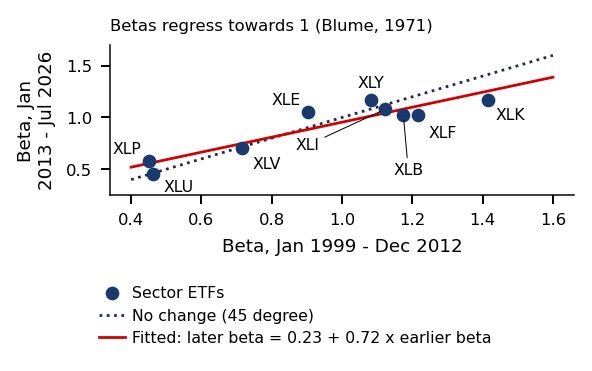
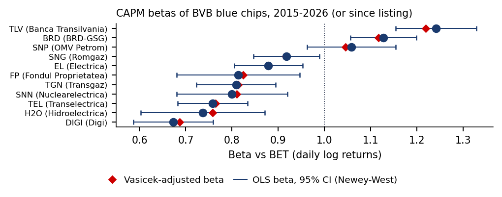

Bucharest University of Economic Studies IDA Institute Digital Assets Blockchain Research Center AI4EFin Artificial Intelligence for Energy Finance Romanian Academy, Institute for Economic Forecasting MSCA Digital Finance
“[W]hen the tests allow for variation in \(\beta\) that is unrelated to size, the relation between market \(\beta\) and average return is flat, even when \(\beta\) is the only explanatory variable.” — Fama & French (1992)
The chapter's question: why do some assets earn more on average than others?
25 US portfolios sorted on size and B/M (book value / market value), Jul 1963 – Jul 2026
annualised mean excess returns: \(3.9\%\) for small growth firms (small-growth), \(13.3\%\) for small value firms (small-value)
does beta explain this gap of about \(9.5\) percentage points?
The classic answer, the CAPM (Capital Asset Pricing Model): the difference is payment for market risk, measured by beta
The thread of the chapter
the CAPM says that once beta is accounted for, nothing is left: alpha is zero
we estimate beta and alpha, then test on the data whether alpha is zero
when it is not, we add factors and check whether those factors survive
[W]hen the tests allow for variation in β that is unrelated to size, the relation between market β and average return is flat, even when β is the only explanatory variable.
The chapter starts from an empirical question: what determines the differences between the average returns of assets? For 25 portfolios of US stocks sorted on market capitalisation and on the ratio of book value to market value (B/M), annualised mean excess returns over July 1963 – July 2026 range from 3.9% for small-growth firms to 13.3% for small-value firms. The question is whether beta explains this gap of about 9.5 percentage points.
The Capital Asset Pricing Model (CAPM) (Sharpe, 1964; Lintner, 1965; Black, 1972) answers that the risk premium of an asset is proportional to its exposure to market risk, beta. The part of the average excess return that beta does not explain is called alpha; in the CAPM, alpha is zero for every asset.
The chapter's argument follows this hypothesis. Beta and alpha are estimated, and the hypothesis that all alphas are zero is then tested. Its rejection leads to multifactor models and to the question of whether the factors proposed in the literature survive multiple testing and replication.
The chart below is the security market line (SML): the mean excess return of each portfolio against its beta. Beta, on the horizontal axis, has no unit; only the returns are annualised percentages.
The security market line (SML) for the 25 size × B/M portfolios, July 1963 – July 2026: left, the mean annual excess return against the CAPM beta, with the CAPM line (slope 7.2%) and the fitted line (slope −4.4%); right, the annual alphas, with the portfolios of the smallest-size quintile in red. Returns and alphas are annual fractions (0.05 = 5%); beta, on the horizontal axis on the left, has no unit. Interactive chart: “The Security Market Line in the Data (1/2)” →
What you will be able to do
Compute a beta with heteroskedasticity- and autocorrelation-robust errors and shrink it.
Compute the joint test of the CAPM alphas and risk premia with robust errors.
Interpret a new factor against multiple-testing hurdles and replication evidence.
Interpret a factor ETF as factor exposures and alpha.
The chapter deals with the cross-section of average returns: why some assets earn more than others on average. A factor model attributes the difference to exposures to a few common sources of risk, and the Capital Asset Pricing Model (CAPM) is the special case with a single factor, the market. The chapter estimates these exposures, tests the restrictions that the models place on average returns, and asks whether the factors found in the literature survive multiple testing and replication.
This section states the question and defines a factor model and its uses. The data and the return conventions used throughout the chapter are described in the Further Topics.
What explains expected returns: the CAPM and the multifactor models.
How exposures are estimated. An exposure, or beta, is a regression coefficient, and the chapter treats its sampling uncertainty and its shrinkage, the pulling of a noisy estimate towards a target value.
How the CAPM is tested: a joint test of the alphas, the intercepts of the regressions on the market return.
What additional factors add and how their risk premia are estimated, by Fama–MacBeth regressions.
Whether published factors survive once multiple testing and replication are taken into account.
The corresponding skills are:
computing a beta with standard errors robust to heteroskedasticity and autocorrelation, and shrinking it;
computing the joint test of the CAPM alphas and the risk premia with robust errors;
judging a new factor against multiple-testing hurdles and replication evidence;
reading a factor exchange-traded fund (ETF) as a set of factor exposures plus an alpha.
The Further Topics and the Appendix are reading for familiarity.
A factor model explains the return of asset \(i\) by a small number \(K\) of common variables \(f_{1,t},\dots,f_{K,t}\), the factors. In excess-return form,
where \(R_{i,t}\) is the return of asset \(i\) in period \(t\) and \(R_{f,t}\) the risk-free rate. The coefficient \(\beta_{i,k}\) is the factor loading, the exposure of asset \(i\) to factor \(k\), and \(\varepsilon_{i,t}\) is the asset-specific, or idiosyncratic, shock.
The intercept \(\alpha_i\) is the part of the average excess return that the factors do not explain. When the factors are themselves excess returns on traded portfolios, a model that prices the asset correctly implies \(\alpha_i = 0\): the average return is fully accounted for by the exposures \(\beta_{i,k}\) times the average factor returns. Testing a pricing model therefore means testing whether the intercepts in (3.1) are zero, jointly across assets.
In brief
A factor model explains the return of asset \(i\) by a few common variables \(f_{1,t},\dots,f_{K,t}\), the factors
To explain an asset: for the technology ETF XLK, a rise of one percentage point in the US market excess return goes with an estimated rise of 1.28 points, an estimate derived in the section on estimating beta.
Other uses, treated in Campbell, Lo & MacKinlay (1997), chapters 5–6, are the cost of capital, portfolio construction and risk management.
In risk management the advantage is the number of parameters. A covariance matrix of \(N\) assets has \(N(N+1)/2\) distinct variances and covariances. A \(K\)-factor model replaces it by the \(NK\) loadings, the \(K(K+1)/2\) elements of the factor covariance matrix and the \(N\) specific variances, \(NK + K(K+1)/2 + N\) parameters in all, which grows linearly rather than quadratically in \(N\). The count assumes that the residuals of different assets are uncorrelated; otherwise the \(N\) specific variances are not enough.
The economic idea of the chapter is that an average return is payment for risk. Investors demand a premium for bearing common risks, the factors (market, size, value and others), and the pricing restriction is \(\mathbb{E}[R^e_i] = \boldsymbol\beta_i^\top\boldsymbol\lambda\). Holding the exposures to the other factors fixed, a larger exposure to a factor raises the mean return if the premium of that factor is positive. Whatever the exposures leave unexplained on average is \(\alpha\).
In brief
The chapter's idea: an average return is payment for risk
investors demand a premium for common risks: the factors (market, size, value …)
holding the other exposures fixed, a larger exposure \(\beta\) to a factor raises the average return if that factor's premium is positive
the pricing restriction is \(\mathbb{E}[R^e_i] = \boldsymbol\beta_i^\top\boldsymbol\lambda\); what the exposures leave unexplained on average is \(\alpha\)
Two uses in this chapter
Explain an asset: for the technology ETF (exchange-traded fund) XLK, a one-percentage-point rise in the US market excess return goes with an estimated rise of \(1.28\) points (Section 3)
Evaluate a fund: is its \(\alpha_i\) positive once its exposures are priced (Sections 4 and 8)?
The data and the return definitions are in Further Topics
Section summary
A factor model writes an excess return as exposures times factors plus an intercept, and a pricing model is the restriction \(\mathbb{E}[R^e_i] = \boldsymbol\beta_i^\top \boldsymbol\lambda\). When the factors are excess returns on traded portfolios, the restriction implies zero intercepts in the regression on these factors; for a centred macro surprise, the intercept is the mean excess return itself. The tests of the chapter use the 25 size × B/M portfolios and the French factors in monthly simple returns; the sector ETFs, factor ETFs and BVB stocks provide the investable and local applications.
From Markowitz to the CAPM
This section derives the CAPM from mean–variance choice. If investors care only about the mean and variance of their portfolio return, they all combine the risk-free asset with one risky portfolio, the tangency portfolio. In equilibrium that portfolio must be the market, and the expected excess return of every asset is then proportional to its beta with the market. The section applies the mean–variance step to the nine US sector ETFs and states the assumptions and implications of the CAPM that the following sections test.
Which Portfolio Does a Mean–Variance Investor Hold?
If investors choose only by mean and variance, which portfolio do they hold? The answer is the frontier of Markowitz (1952), which yields the portfolio with the highest Sharpe ratio.
What mean return does each asset then earn? The answer is the CAPM (Sharpe, 1964),(Lintner, 1965), which states that this portfolio is the market portfolio itself.
Both steps are applied to the nine long-history US sector ETFs of the Select Sector SPDR family, available since December 1998. They are investable and their series run without a break from 1999 to 2026. Their coverage changed, however: the reclassifications of the Global Industry Classification Standard (GICS) in 2016, which created the real estate sector, and in 2018, which created communication services, moved companies out of these nine funds. The nine therefore no longer cover the whole S&P 500.
In brief
The question of this section: if investors choose only by mean and variance, which portfolio do they hold?
The second question: what mean return does each asset then earn?
Step 1: the Markowitz (1952) frontier gives the portfolio with the highest Sharpe ratio
We apply both to the nine long-history US sector ETFs (Select Sector SPDR), available since December 1998
they are investable, and their series run without a break from 1999 to 2026
the GICS (Global Industry Classification Standard) reclassifications of 2016 (real estate) and 2018 (communication services) moved companies out of these nine funds
the nine therefore no longer cover the whole S&P 500
Let \(\mathbf{w}\) be the vector of portfolio weights, \(\boldsymbol\mu\) the vector of expected excess returns and \(\boldsymbol\Sigma\) the covariance matrix of the returns. The frontier of Markowitz (1952) is the set of fully invested portfolios with the smallest variance for each target mean \(\mu^*\):
The weights are not restricted in sign; a negative weight is a short position.
The first-order conditions of (3.2) give \(\mathbf{w}^* = \boldsymbol{\Sigma}^{-1}(\eta_1\boldsymbol{\mu} + \eta_2\mathbf{1})\), where \(\eta_1\) and \(\eta_2\) are the Lagrange multipliers set by the two constraints. Because the multipliers are linear in \(\mu^*\), so are the weights. It follows that every frontier portfolio is a combination of any two frontier portfolios, the property known as two-fund separation.
In the plane of volatility \(\sigma_p\) and mean \(\mu_p\) the frontier is a hyperbola. Its leftmost point is the minimum-variance portfolio. Below that point, every portfolio is dominated by one with the same variance and a higher mean, so only the upper branch, above the minimum-variance portfolio, is the efficient frontier.
In brief
Markowitz (1952): with weights \(\mathbf{w}\), expected excess returns \(\boldsymbol{\mu}\) and covariance \(\boldsymbol{\Sigma}\), the frontier solves
The Sharpe ratio of portfolio \(p\),\(SR_p = \mathbb{E}[R_p - R_f]/\sigma_p\), is its expected excess return per unit of volatility, where \(R_p\) and \(\sigma_p\) are the return and the volatility of the portfolio. When a risk-free asset is available, the investor's problem reduces to finding the risky portfolio with the highest Sharpe ratio, the tangency portfolio:
The formula holds when \(\boldsymbol\Sigma\) is positive definite and the denominator is positive; the denominator only rescales \(\boldsymbol\Sigma^{-1}\boldsymbol\mu\) so that the weights sum to 1.
All mixes of the risk-free asset and the tangency portfolio lie on the Capital Market Line (CML), \(\mu_p = SR_{\text{tan}}\,\sigma_p\), the line from the risk-free rate tangent to the efficient frontier. If the market portfolio is the tangency portfolio, the first-order condition of the tangency problem implies that the mean excess return of every asset is linear in its beta with the market. Problem A2 of Seminar 3 derives this result.
In brief
Sharpe ratio\(SR_p = \mathbb{E}[R_p - R_f]/\sigma_p\): the excess return per unit of volatility
Tangency portfolio: the portfolio with the highest Sharpe ratio
The chart estimates the frontier of the nine sector ETFs from monthly data, January 1999 – July 2026 (\(T = 331\) months). Annualised volatility is on the horizontal axis and the annualised mean excess return on the vertical axis, both as fractions (\(0.10 = 10\%\)). The frontier is computed in sample, from the sample means and covariances, and the chart marks the tangency portfolio and SPY, the ETF that tracks the S&P 500 and serves as the market proxy.
In the interactive version, the slider sets the last month of the estimation sample, from month 60 to the full 331 months, and the ▶ button extends the sample step by step. The second panel shows the tangency weights for the chosen sample.
Question for the room SPY has a Sharpe ratio of 0.49 and the tangency portfolio of the sectors 0.66. Does this distance reject the CAPM?
Answer
No. The tangency portfolio is optimised in sample, so the difference requires a statistical assessment. The GRS test on the nine sectors, with Mkt-RF as the market, gives GRS = 0.53, with p = 0.85: we do not reject the CAPM at 5%, which does not establish that the model is correct. The tangency portfolio holds large short positions: −0.37 in XLF and −0.21 in XLB.
The tangency portfolio has a mean excess return of 8.55%, a volatility of 12.96% and a Sharpe ratio of 0.66; SPY has 7.44%, 15.08% and 0.49. In this sample SPY therefore lies below the frontier, whereas the CAPM requires the market to be the tangency portfolio. Because the tangency portfolio is optimised on the same data, the question is how much of this gap is estimation error; Section 4 tests it against the market factor Mkt−RF.
The tangency portfolio of the nine sectors has a mean excess return of 8.55% a year, a volatility of 12.96% and a Sharpe ratio of 0.66. SPY has a mean of 7.44%, a volatility of 15.08% and a Sharpe ratio of 0.49, and so lies below the estimated frontier. The CAPM, introduced in the next frames, requires the market to be the tangency portfolio itself.
The gap in Sharpe ratios, 0.66 against 0.49, may come partly from estimation error: the tangency portfolio is optimised on the same data on which it is evaluated. How much of the difference survives estimation error? The test in the section on testing the CAPM compares the improvement with the one that estimation noise would produce, with the market factor Mkt−RF as the benchmark, not SPY.
The tangency portfolio also holds large short positions, \(-0.37\) in financials (XLF) and \(-0.21\) in materials (XLB); the Further Topics show what each sector holds. Such extreme weights arise because the means are estimated with noise, the problem studied in Chapter 4.
In brief
Chart axes: annualised volatility and mean excess return, as fractions (\(0.10 = 10\%\))
9 sector ETFs, monthly, January 1999 – July 2026 (\(T = 331\) months)
the frontier is estimated in-sample
Tangency portfolio (red star): mean \(8.55\%\), volatility \(12.96\%\), Sharpe ratio \(0.66\)
SPY (green circle): mean \(7.44\%\), volatility \(15.08\%\), Sharpe ratio \(0.49\)
SPY: the ETF that tracks the S&P 500, used as the market proxy
The CAPM (next slides) requires the market to be the tangency portfolio itself
in this sample SPY lies below the frontier
Sharpe ratio \(0.66\) against \(0.49\) in this sample: could the gap come from estimation error?
the tangency portfolio is optimised on the same data on which it is evaluated
The CAPM was formulated by Sharpe (1964) and Lintner (1965). If all investors choose mean–variance efficient portfolios and share the same beliefs about means and covariances, they all hold the same tangency portfolio, combined with the risk-free asset in proportions set by their risk aversion. Since every asset must be held by someone, the tangency portfolio must then be the market portfolio, with each asset weighted by its market value.
The pricing implication is that the expected excess return of every asset is proportional to its beta:
where \(R_i\) and \(R_m\) are the returns of asset \(i\) and of the market portfolio and \(\mathbb{E}[R_m] - R_f\) is the market risk premium. Beta measures the sensitivity of the asset to the market; an asset with \(\beta_i > 1\) amplifies market moves.
Black (1972) derived a version without unlimited borrowing at the risk-free rate. In this zero-beta CAPM the risk-free rate in (3.4) is replaced by the expected return of a portfolio uncorrelated with the market; its consequence, a flatter SML, is discussed in Further Topics.
The assumptions are strong: mean–variance investors with identical beliefs and a single period, unlimited borrowing and lending at \(R_f\), and no taxes or trading costs. Under them, only beta is priced: at the same beta, the model predicts the same expected return, so no other characteristic should explain differences in expected returns between assets with the same beta. Idiosyncratic risk earns nothing, because diversification removes it. The use of the CAPM for the cost of capital, and the uncertainty that matters there, is treated in Further Topics.
The testable statement is the Security Market Line (SML): every asset lies on the line in the (beta, mean) plane, and the slope of that line equals the market premium. The SML and the CML should not be confused. The SML contains every asset and portfolio, efficient or not, and plots the mean against beta; the CML contains only efficient portfolios and plots the mean against volatility.
A final question is which portfolio counts as "the market". The answer decides what a test of the CAPM can establish, the subject of Roll's critique in Section 4.
In brief
Assumptions
mean–variance investors with identical beliefs, one period
unlimited borrowing and lending at \(R_f\)
no taxes or trading costs
Only beta is priced: at the same beta, the model predicts the same expected return, whatever the asset's other characteristics
Idiosyncratic risk earns nothing, because diversification removes it
SML (Security Market Line): every asset lies on the line (beta, mean)
its slope equals the market premium
it is the testable statement of the CAPM (Section 4)
Unlike the SML, the CML contains only efficient portfolios
Which portfolio is “the market”?
the answer decides what a test of the CAPM can establish (Roll's critique, Section 4)
The CAPM is a statement about means: (3.4) links the expected excess return of an asset to that of the market; written in excess returns, the relation has no intercept. The data, however, are monthly returns, not true means, so the relation is estimated as a time-series regression, the market model:
The intercept \(\alpha_i\), alpha, is the average excess return that beta does not explain. Taking means of both sides, \(\alpha_i = \mathbb{E}[R^e_i] - \beta_i\,\mathbb{E}[R^e_m]\), with \(R^e = R - R_f\): alpha is the vertical distance between the asset and the security market line (SML). A positive alpha means an average return above the one justified by the market risk taken.
This is why alpha is the quantity every investor is after: it measures the performance left after adjusting for market risk. Of two funds with the same beta, the one with the higher mean return has the higher alpha. Market exposure can be obtained at low cost through an index fund; active fund managers are paid for alpha, the return earned above that exposure.
The CAPM states that in equilibrium \(\alpha_i = 0\) for every asset. The next section estimates \(\beta_i\) and \(\alpha_i\), and the section on testing the CAPM tests whether all alphas are jointly zero.
In brief
The CAPM is a statement about means; written in excess returns, the relation has no intercept
The mean–variance frontier and the tangency portfolio follow from (3.2) and (3.3); the CAPM adds the equilibrium condition that the tangency portfolio is the market, which gives the linear relation (3.4) between mean excess return and beta. On the nine US sectors, SPY lies below the in-sample frontier; how much of this gap is estimation error remains to be seen. Written as a regression, the CAPM relation gains an intercept, alpha, which the CAPM requires to be zero. The next section estimates beta, the only priced quantity in the CAPM, together with its uncertainty.
Estimating Beta
Under the CAPM, beta is the only characteristic of an asset that is priced, and it enters the cost of capital and hedging decisions. This section estimates beta by ordinary least squares, computes standard errors robust to heteroskedasticity and autocorrelation, and examines the choices that change the estimate: frequency, window, market proxy, data cleaning and asynchronous trading. It then shows that betas vary over time and that shrinkage towards a cross-sectional prior improves their forecasts.
The section asks by how much an asset moves when the market moves by 1%, and how certain that number is. Beta enters the cost of capital, where it multiplies the market premium, and hedging, where it sets the size of the offsetting market position. An imprecise beta therefore passes its error into both.
The running example is XLK, the technology ETF, which has the highest beta among the sectors in the sample. The steps are robust standard errors and the choices that change beta, then rolling betas, shrinkage and the application to the BVB.
In brief
The question of this section
by how much does an asset move when the market moves by 1%?
how sure is that number?
Beta enters the cost of capital and hedging
The running example: XLK, the technology ETF, the sector with the highest beta in the sample
The steps
robust standard errors and the choices that change beta
The chart has three panels, all on monthly XLK returns. The left panel shows the ordinary least squares (OLS) regression of the XLK excess return on the market excess return. The middle panel shows the OLS residuals over time, with spikes in 2000–2002, 2008 and 2020. The right panel shows the bootstrap distribution of the estimated alpha, with its 95% interval.
The residual spikes are the reason the classical standard errors are suspect: the residual variance is not constant, a symptom of the volatility clustering documented in Chapter 1. The bootstrap in the right panel resamples blocks of consecutive months, so that dependence within a block is preserved.
In the interactive version, the first slider sets the bootstrap block length, from 1 to 36 months, and the second the number of Newey–West lags \(L\), from 0 to 12. The readouts report the alpha, the beta and the standard error of beta under the classical, White and Newey–West formulas.
Question for the room The standard error of the XLK beta is 0.041 with the classical formula and 0.082 with Newey–West. Does the estimate beta = 1.277 change as well?
Answer
No. Newey–West retains the OLS coefficients and changes their estimated covariance matrix; it neither reweights observations nor applies shrinkage. Beta remains 1.277. Estimated annual alpha is 0.33%, with t = 0.13. The 95% bootstrap interval, [−5.5%, 4.9%], includes zero: we do not reject zero alpha at 5%.
The estimated beta is 1.277 and stays the same for every choice of \(L\): the Newey–West calculation keeps the OLS coefficients and changes only their estimated covariance matrix. The standard error of beta is 0.041 with the classical formula and 0.082 with Newey–West. The estimated annual alpha is 0.33%, with \(t = 0.13\), and the 95% bootstrap interval for alpha, from −5.5% to 4.9%, includes zero, so we do not reject a zero alpha at 5%.
In brief
XLK on Mkt-RF, monthly excess returns, Jan 1999 – Jul 2026. Left: the OLS line, \(\hat\beta = 1.277\); middle: the OLS residuals, with spikes in 2000–2002, 2008 and 2020; right: the bootstrap distribution of alpha (details in Further Topics) MFM_ch3_seminar
and the OLS estimate of the slope is the sample analogue of the CAPM beta, \(\hat\beta_i = \widehat{\operatorname{Cov}}(R^e_i, R^e_m)/\widehat{\operatorname{Var}}(R^e_m)\). The model splits the variance of the asset into two parts, \(\sigma_i^2 = \beta_i^2 \sigma_m^2 + \sigma_{\varepsilon,i}^2\), where \(\sigma_i^2\) and \(\sigma_m^2\) are the variances of the asset and the market and \(\sigma_{\varepsilon,i}^2\) the residual variance. The first part is systematic risk, priced under the CAPM; the second is idiosyncratic risk, which diversification removes. The regression \(R^2 = \beta_i^2\sigma_m^2/\sigma_i^2\) is the systematic share.
The classical OLS standard error assumes residuals with constant variance and no autocorrelation. Neither holds for asset returns. Volatility clustering makes the residuals heteroskedastic, and the product \(R^e_{m,t}\varepsilon_{i,t}\), whose variance determines the precision of \(\hat\beta\), can be autocorrelated. For XLK on Mkt-RF, monthly over 1999–2026, \(\hat\beta = 1.277\), and its standard error is 0.041 with the classical formula, 0.054 with White errors and 0.082 with Newey–West (5 lags): the estimate stays the same, and only the estimated covariance matrix of the coefficients changes. Heteroskedasticity- and autocorrelation-consistent (HAC) standard errors (Newey & West, 1987) correct for both.
In brief
Market model \(R^e_{i,t} = \alpha_i + \beta_i R^e_{m,t} + \varepsilon_{i,t}\)
OLS (Ordinary Least Squares): \(\hat\beta_i = \widehat{\operatorname{Cov}}(R^e_i, R^e_m)/\widehat{\operatorname{Var}}(R^e_m)\)
An estimated beta is not a property of the asset alone; it also depends on choices made by the analyst:
The frequency and the window. Common practice uses three to five years of monthly data or one to two years of daily data. A longer window lowers the standard error, but it mixes periods in which the true beta may differ, as the frames on time-varying betas show.
The market proxy: SPY, which tracks the S&P 500, or the Fama–French market factor Mkt-RF for US assets, and BET for Romanian stocks. Different proxies give different betas for the same asset.
Data cleaning. A capital event that is not adjusted in the price series creates a fake return. On 7 September 2023, the ex-date of a special dividend of RON 1.7225 per share of Fondul Proprietatea (FP), the closing price fell by 81%, but the total return of the day, with the dividend included, was +6.0%. A regression on unadjusted prices would treat the fall as a market-unrelated loss of 81% and distort both beta and the residual variance.
In brief
Frequency and window: usually 3–5 years of monthly data or 1–2 years of daily data
a longer window lowers the standard error but mixes different beta regimes (Betas Are Not Constant)
Market proxy: SPY (S&P 500) or Mkt-RF for US assets, BET for Romanian stocks
Data cleaning: an unadjusted capital event creates a fake return
Example: 7 September 2023 is the ex-date of a RON 1.7225 per share special dividend of Fondul Proprietatea (FP)
On that day the close falls by \(81\%\), but the total return of the day is \(+6.0\%\)
The fourth choice concerns asynchronous trading: the closing prices of different assets are not recorded at the same moment. An illiquid stock that does not trade every day reacts to market news with a delay, so part of its response to today's market return appears in a later return. The daily OLS beta, which captures only the same-day response, is then biased towards 0.
The beta of Dimson (1979) corrects this by regressing the stock return on three days of market returns, the previous day, the same day and the next day,
and adding the three slopes. The chart shows a simulation of a stock with true beta 1 that trades on only 75% of days, with the estimated slopes on the three market returns and their sum. A detailed example on XLK is in Further Topics.
In the interactive version, the first slider sets the probability that the stock trades on a given day and the second the true beta; the ▶ button raises the trading probability.
Question for the room In this simulation, true beta is 1 and the stock trades on 75% of the days; the contemporaneous slope in the Dimson regression is 0.77. As the trading probability rises from 75% to 100%, how does this slope change?
Answer
The contemporaneous slope rises from 0.77 to approximately 1.00. With daily trading, non-trading days no longer delay the response. The Dimson sum is approximately 0.98; in a finite sample it need not equal 1 exactly. At 75%, the slope on the previous-day market return is 0.16, and the Dimson sum 0.93.
At a trading probability of 75%, the slope on the same-day market return is 0.77, so the same-day regression understates beta. The slope on the previous-day market return is 0.16: part of the reaction arrives one day late. The Dimson beta is 0.93, much closer to 1. When the trading probability rises to 100%, the same-day slope rises from 0.77 to about 1.00, because days without trades no longer delay the response; the Dimson sum is then about 0.98, which in a finite sample need not equal 1 exactly.
In brief
Asynchronous trading: the closing prices of different assets are not recorded at the same moment
An illiquid stock reacts to market news with a delay, so the daily OLS beta is biased towards 0
The Dimson beta (Dimson (1979)): regression on three days of market returns
the market return of the previous day, the same day and the next day
The chart shows rolling OLS betas of the sector ETFs, each estimated on a window of 252 daily log returns, about one trading year, against the market. Time is on the horizontal axis and the estimated beta on the vertical axis. A rolling beta uses at each date only the most recent window, so it tracks changes in the exposure that a full-sample regression averages away.
In the interactive version, the slider changes the length of the window, and the readout gives the minimum, the maximum and the last value of beta for each sector.
Question for the room In these data, how does the range of rolling XLE beta estimates change when the window increases from 252 to 504 days?
Answer
The range changes from [−0.31, 1.49] to [0.20, 1.38]. The longer window smooths the observed variation. This does not establish that true beta is constant. The XLF beta moves between 0.60 and 2.17 at 252 days, with its maximum right after the 2008–2009 banking crisis.
At 252 days, the beta of financials (XLF) ranges from 0.60 to 2.17 and that of energy (XLE) from −0.31 to 1.49. With a window of 504 days the XLE range becomes 0.20 to 1.38: the longer window smooths the observed variation. The smoothing does not show that the true beta is constant; it averages over more regimes in each window.
The betas against SPY, estimated on rolling windows of 252 daily log returns, move over wide ranges. The beta of financials (XLF) ranged from 0.60 to 2.17 and peaked right after the banking crisis of 2008–2009. The beta of technology (XLK) ranged from 0.86 to 1.90; it was high in the dot-com bubble of 2000–2001 and is 1.75 in the last 252-day window.
The beta of energy (XLE) ranged from −0.31 to 1.49 and is negative in the last window: the covariance of XLE returns with SPY turned negative. The beta of utilities (XLU), the classic defensive sector, ranged from 0.06 to 1.00.
A single full-sample beta hides these regimes. For the cost of capital or hedging, the relevant beta is the one expected over the horizon of the decision, which may differ substantially from the sample average. Models with time-varying betas are covered in Chapter 5 and Chapter 6.
In brief
The chart: OLS beta against SPY over rolling windows of 252 daily log returns (about one year)
The beta of financials (XLF) ranged from \(0.60\) to \(2.17\)
The XLF beta peaked right after the 2008–2009 banking crisis
The beta of technology (XLK) ranged from \(0.86\) to \(1.90\)
The XLK beta was high in the dot-com bubble (2000–2001)
it is \(1.75\) in the last 252-day window
The beta of energy (XLE) ranged from \(-0.31\) to \(1.49\)
The XLE beta is negative in the last window: the covariance of XLE returns with SPY turned negative
The beta of utilities (XLU), the classic defensive sector, ranged from \(0.06\) to \(1.00\)
A single full-sample beta hides these regimes
Models with time-varying betas are covered in Chapters 5–6
Estimated betas regress to the mean. A very high or very low estimate is partly noise, so in the next period the estimate of the same asset tends to move towards the cross-sectional mean, which is close to 1. Blume (1971) measured this by regressing the betas of one period on those of the previous period, and the practitioner rule \(\beta^{\text{Blume}} = 0.33 + 0.67\,\hat\beta\) derives from that regression.
Vasicek (1973) gave the Bayesian version: a weighted average of the asset's own estimate and a prior,
The prior mean \(\bar\beta\) is the mean of the betas of all assets, \(\sigma^2_\beta\) is the variance of the true betas across assets, and \(\operatorname{se}(\hat\beta_i)\) is the standard error of the asset's estimate.
The weight \(w_i\) on the own estimate is larger when \(\hat\beta_i\) is precise, that is, when its standard error is small relative to the dispersion of the true betas. Unlike the Blume rule, which applies the same coefficients to every asset, the Vasicek rule shrinks noisy estimates more and precise estimates less.
In brief
Regression to the mean: a very high or very low estimated beta is partly noise
so in the next period it tends to move towards the cross-sectional mean, which is close to 1
Blume (1971): regression of betas in one period on betas in the previous period
Hence the practitioner rule: \(\beta^{\text{Blume}} = 0.33 + 0.67\,\hat\beta\)
Vasicek (1973): a weighted average of the asset's estimate and a prior
The variance \(\sigma^2_\beta\) of the true betas is not observed, but it can be estimated from the cross-section. The variance of the estimates across assets adds true variance and noise, \(\operatorname{Var}_{cs}(\hat\beta) = \sigma^2_\beta + \overline{\operatorname{se}^2}\), where \(\overline{\operatorname{se}^2}\) is the mean squared standard error. Hence the empirical-Bayes estimate
In the example, XLK is regressed on SPY using monthly data for 1999–2012. The estimate is \(\hat\beta = 1.415\) with a Newey–West standard error of 0.139; compared with the 1.277 obtained against Mkt-RF, both the benchmark (SPY) and the period (1999–2012 against 1999–July 2026) differ. The prior from the nine sectors has \(\bar\beta = 0.949\) and, by (3.8),\(\sigma^2_\beta = 0.1159 - 0.0077 = 0.1082\). The weight on the own estimate is \(w = 0.1082/(0.1082 + 0.139^2) = 0.849\), so the Vasicek beta is \(\beta^{V} = 0.849 \times 1.415 + 0.151 \times 0.949 = 1.344\). The Blume beta is \(0.33 + 0.67 \times 1.415 = 1.278\).
The beta estimated over the following period, 2013–2026, is 1.172. Both adjustments are closer to it than the unadjusted estimate. A single asset is not a criterion, however: across all nine sectors, the root mean squared error (RMSE) of the forecast is 0.135 for OLS, 0.109 for Blume and 0.114 for Vasicek. The shrinkage of betas towards 1 for BVB stocks is treated in Further Topics.
In brief
The variance of the estimates across assets adds true variance and noise
\(\operatorname{Var}_{cs}(\hat\beta) = \sigma^2_\beta + \overline{\operatorname{se}^2}\), with \(\overline{\operatorname{se}^2}\) the mean squared standard error
So \(\sigma^2_\beta = \operatorname{Var}_{cs}(\hat\beta) - \overline{\operatorname{se}^2}\), the empirical-Bayes estimate
The quick check applies the three tools of the section in three parts:
Comparing classical and Newey–West intervals for a beta of 0.90 estimated from 120 monthly returns, with standard errors of 0.05 and 0.09, and asking whether the conclusion that beta is below 1 survives the robust error;
Computing the empirical-Bayes variance (3.8) and Vasicek betas (3.7) for an asset with \(\hat\beta = 1.6\) and two different standard errors;
Reading a Dimson beta (3.6) for an illiquid BVB stock from three slopes on BET.
An estimated beta comes with a standard error that should be computed with HAC errors, (3.24); it depends on the frequency, the window, the market proxy, data cleaning and, for illiquid stocks, asynchronous trading, which the Dimson correction (3.6) addresses. Betas move over time, and shrinkage towards a cross-sectional prior, (3.7), improved the forecast of the XLK beta. The next section turns from the beta of one asset to the joint test of the CAPM across many assets.
Testing the CAPM
The CAPM implies that every asset lies on the security market line, or equivalently that every alpha in the market model is zero. This section tests that restriction on the 25 size × B/M portfolios, first graphically, with the security market line, then formally, with the joint test of Gibbons, Ross & Shanken (1989). It ends with the limits of such a test: Roll's critique and the dependence of the conclusion on the choice of test assets.
The question of this section is whether mean returns lie on the line \(\mathbb{E}[R^e_i] = \beta_i\,\mathbb{E}[R^e_m]\), which is the same as asking whether all assets have zero alpha. The test assets are the 25 portfolios sorted on size and B/M of Fama & French (1993).
These portfolios contrast size and B/M systematically, characteristics that the literature associates with different mean returns; their annualised mean excess returns range from 3.9% to 13.3%. The steps are the SML in the data, the GRS test, which checks all alphas at once, and the limits of the test.
In brief
The question of this section
do mean returns lie on the line \(\mathbb{E}[R^e_i] = \beta_i\,\mathbb{E}[R^e_m]\)?
The portfolios are formed following Fama & French (1993). Every June of year \(t\), the stocks of the NYSE, AMEX and NASDAQ are sorted twice, independently: on size, measured by market capitalisation (market equity, ME) at the end of June \(t\), and on B/M, book equity for fiscal year \(t-1\) divided by market capitalisation in December \(t-1\). The breakpoints are the NYSE quintiles, the 20th, 40th, 60th and 80th percentiles; with breakpoints computed on all stocks, the many NASDAQ micro-caps would fill the groups. Each of the 25 intersections is a value-weighted portfolio, held from July \(t\) to June \(t+1\).
The grid shows the mean annual excess return of each portfolio, July 1963 – July 2026, with size quintiles in rows (ME1 small to ME5 big) and B/M quintiles in columns (BM1 growth to BM5 value). In every row, the value column has a higher mean return than the growth column. The extreme corners are small-growth, 3.9% a year, and small-value, 13.3% a year.
One caution applies to any model that uses the size factor SMB and the value factor HML. These factors, built in Section 5, use the same characteristics as the portfolios, although through \(2 \times 3\) rather than \(5 \times 5\) sorts, so a high \(R^2\) of such a model on these portfolios proves little (Lewellen, Nagel & Shanken, 2010).
In the interactive version, the menu switches the statistic shown in the grid between the mean annual excess return, the annual CAPM alpha and the Newey–West \(t\)-statistic of alpha, and the slider moves the start of the sample from 1963 to 2006.
Over July 1963 – July 2026, the CAPM alpha is −6.3% a year for small-growth and +5.7% for small-value, so the difference between the two corners grows from about 9.46 percentage points in mean returns to 12.00 in alphas. The beta of small-growth is about 1.42 and that of small-value 1.06: the CAPM attributes a larger market component to the portfolio with the lower mean return, which widens the gap rather than closing it.
The left panel plots the mean annual excess return of each of the 25 portfolios against its CAPM beta, July 1963 – July 2026, with two lines. The CAPM line passes through the origin with a slope equal to the market premium. The fitted line is the cross-sectional regression of the mean returns on the betas. The right panel shows the annual alphas of the 25 portfolios, with the portfolios of the smallest-size quintile in red. Returns and alphas are annual fractions, \(0.05 = 5\%\); beta has no unit.
If the CAPM held, the points would lie on the CAPM line and the alphas would be close to zero. The fitted line from 1963 has a slope of −4.4% a year, against 7.2% for the CAPM line.
In the interactive version, the slider moves the start of the sample from 1963 to 2006, and the readouts report the two slopes, the range of the betas and the GRS statistic.
Question for the room From 1963, the line fitted on the 25 portfolios has a slope of −4.4% a year. When the sample start reaches January 2003, what happens to this slope?
Answer
For January 2003–July 2026, the fitted slope is approximately +2.0% a year, while the market premium is 10.7%. The slope's sign depends on the sample: it is −4.4% when starting in 1963 and −1.0% when starting in 2006. From 1963, the betas cover only 0.86–1.42, and GRS = 4.20, with p = 7.5 × 10−11 (rounded on the slide: 8 × 10−11).
With the sample starting in January 2003, the fitted slope is about +2.0% a year, while the market premium is 10.7%; with the start in 2006, it is −1.0%. The sign of the fitted slope therefore depends on the sample, but in none of these samples does it reach the market premium. From 1963, the betas cover only 0.86 to 1.42, a narrow range on which the slope is estimated.
The sample has \(T = 757\) months, July 1963 – July 2026, and the 25 portfolios are re-sorted each June and value-weighted. The CAPM line has a slope of 7.2% a year, the market premium. The fitted line, from the cross-sectional regression of mean returns on beta, has a slope of −4.4%: a higher beta goes with a lower average return, the flat or negative relation described by Fama & French (1992).
The betas span only 0.86 to 1.42, so the portfolios differ far more in mean returns than in market exposure. The alphas are large at the corners: +5.7% a year for small firms with high B/M (small-value) and −6.3% for small firms with low B/M (small-growth). Ten of the 25 alphas have \(|t| > 1.96\) with HAC errors.
In this sample, portfolios with higher betas did not earn higher returns on average. The question that remains, whether all these deviations can be compatible with zero, is answered by the GRS test.
In brief
The 25 portfolios, July 1963 – July 2026, \(T = 757\)
re-sorted each June and value-weighted
The CAPM line has slope \(7.2\%\) a year
returns and alphas: annual fractions, \(0.05 = 5\%\); beta has no unit
The fitted line has slope \(-4.4\%\): higher beta, lower average return
fitted line: the cross-sectional regression of mean returns on beta
Betas span only \(0.86\)–\(1.42\)
Alpha is \(+5.7\%\) a year for small firms with high B/M (small-value)
and \(-6.3\%\) a year for small firms with low B/M (small-growth)
10 of the 25 alphas have \(|t| > 1.96\) (HAC errors)
In this sample, portfolios with higher betas did not earn higher average returns
The next question: can all these deviations be consistent with zero?
Jensen's alpha (Jensen, 1968) is the intercept \(\alpha_i\) of the market model (3.5). The CAPM implies \(\alpha_i = 0\) for every asset. A separate \(t\)-test can be run for each asset; for XLK, \(t = 0.13\). With many assets, however, some alphas look significant by chance alone, the multiple-testing problem of the section on multiple testing, and separate tests do not use the correlation between the residuals of different assets.
The test of Gibbons, Ross & Shanken (1989) (GRS) tests all assets at once, \(H_0: \alpha_1 = \dots = \alpha_N = 0\), with the statistic
\[W = \frac{T - N - 1}{N}\; \frac{\hat{\boldsymbol\alpha}^\top \hat{\boldsymbol\Sigma}^{-1}\hat{\boldsymbol\alpha}}{1 + \hat\mu_m^2/\hat\sigma_m^2} \;\sim\; F(N,\, T - N - 1),\]
(3.9)
where \(N\) is the number of test assets, \(T\) the number of months and \(\hat{\boldsymbol\alpha}\) the vector of the \(N\) estimated alphas. The matrix \(\hat{\boldsymbol\Sigma}\) is the maximum-likelihood residual covariance, with divisor \(T\), and \(\hat\mu_m/\hat\sigma_m\) is the sample Sharpe ratio of the market.
In brief
Jensen's alpha (Jensen (1968)): the market-model intercept \(\alpha_i\)
The CAPM implies \(\alpha_i = 0\) for every asset
A separate \(t\)-test for each asset: XLK has \(t = 0.13\)
With many assets, some alphas look significant by chance alone (Section 7)
\[ W = \frac{T - N - 1}{N}\; \frac{\hat{\boldsymbol\alpha}^\top \hat{\boldsymbol\Sigma}^{-1}\hat{\boldsymbol\alpha}}{1 + \hat\mu_m^2/\hat\sigma_m^2} \;\sim\; F(N,\, T - N - 1) \]
Notation
\(N\): number of test assets; \(T\): number of months; \(\hat{\boldsymbol\alpha}\): the \(N\) estimated alphas
\(\hat{\boldsymbol\Sigma}\): maximum-likelihood residual covariance (divided by \(T\))
\(\hat\mu_m/\hat\sigma_m\): Sharpe ratio of the market
The quadratic form \(\hat{\boldsymbol\alpha}^\top \hat{\boldsymbol\Sigma}^{-1}\hat{\boldsymbol\alpha}\) in (3.9) is a weighted sum of squared alphas: an alpha counts more when the residuals of its asset are less volatile, because such an alpha is harder to attribute to noise. The decision rule rejects \(H_0\) when \(W\) exceeds the 95% quantile of \(F(N, T - N - 1)\).
The \(F\) distribution is exact, conditional on the factors, when the errors are i.i.d. multivariate Normal, independent of the factors, with zero mean and a constant nonsingular covariance matrix. Under weaker assumptions, a version based on the generalised method of moments (GMM) applies; it is treated, together with betting against beta (BAB), in Further Topics.
The statistic also has a Sharpe-ratio form. With monthly ratios and moments divided by \(T\),\(\hat{\boldsymbol\alpha}^\top \hat{\boldsymbol\Sigma}^{-1}\hat{\boldsymbol\alpha} = \widehat{SR}^2(f, \text{assets}) - \widehat{SR}^2(f)\), the gain in the squared maximum Sharpe ratio when the test assets are added to the factor; \(W\) is this gain, normalised. A large \(W\) therefore means that the market portfolio is far from the efficient frontier built from the market and the test assets. For \(N = 1\),\(W = t^2\), where \(t\) is the classical (OLS, not HAC) \(t\)-statistic of alpha, and \(F(1, T - 2)\) is the distribution of the square of a Student-\(t\) variable with \(T - 2\) degrees of freedom; the GRS test generalises the \(t\)-test to many assets.
In brief
\(\hat{\boldsymbol\alpha}^\top \hat{\boldsymbol\Sigma}^{-1}\hat{\boldsymbol\alpha}\): a weighted sum of squared alphas
an alpha counts more when the asset's residuals are less volatile
Decision: reject \(H_0\) when \(W\) exceeds the 95% quantile of \(F(N, T - N - 1)\)
The distribution is exact, conditional on the factors
errors i.i.d. multivariate Normal, independent of the factors
zero mean and constant nonsingular covariance
The Sharpe-ratio form (monthly, moments divided by \(T\))
\(W\) is this gain in the squared maximum Sharpe ratio, normalised: a large \(W\) means the market is far from the frontier built from the market and the test assets
For \(N = 1\), \(W = t^2\): GRS generalises the \(t\)-test
\(t\): the classical (OLS, not HAC) \(t\)-statistic of alpha
\(F(1, T - 2)\) is the distribution of the square of a Student-\(t\) variable with \(T - 2\) degrees of freedom
On the 25 size × B/M portfolios, July 1963 – July 2026 (\(T = 757\),\(N = 25\)), the GRS statistic is 4.20, with \(p = 8 \times 10^{-11}\). The CAPM is rejected: the deviations of the alphas are large relative to their uncertainty. The rejection, however, concerns the model together with the index used as the market: the index is not mean–variance efficient relative to these assets. Whether the model or the index is at fault is the subject of Roll's critique.
In brief
The 25 size \(\times\) B/M portfolios, July 1963 – July 2026 (\(T = 757\), \(N = 25\))
\(W = 4.20\), with \(p = 8 \times 10^{-11}\)
The CAPM is rejected: the alphas are large relative to their uncertainty
The rejection concerns the model together with the index used as the market
Roll (1977) pointed out that the CAPM is a statement about the true market portfolio of all wealth. The stock indices used as the market omit bonds, real estate, private firms and human capital, so they are at best proxies.
The critique rests on a mathematical fact: betas computed against any mean–variance efficient portfolio price all mean returns exactly, which is the result of problem A2 of Seminar 3. The linear relation between mean and beta is therefore equivalent to the efficiency of the portfolio used to compute the betas, whatever the economics.
It follows that a CAPM test really checks whether the index used as the market is efficient relative to the test assets. A rejection can come from the model or from the choice of index, and the test alone cannot tell which.
In brief
Roll (1977): the CAPM is a statement about the true market portfolio of all wealth
The stock indices used as the market omit bonds, real estate, private firms and human capital
Mathematically, betas computed against any efficient portfolio price all mean returns exactly
The conclusion of the test also depends on the test assets. On the nine sector ETFs of Section 2, January 1999 – July 2026 (\(T = 331\)), with Mkt-RF as the market, the CAPM is not rejected: GRS \(= 0.53\) with \(p = 0.85\). Adding the sectors to the market raises the squared monthly Sharpe ratio by 0.015, less than the 0.029 that noise alone would produce (see the Appendix).
Over the same 331 months, the 25 size × B/M portfolios reject the CAPM, with GRS \(= 2.91\) and \(p = 9 \times 10^{-6}\). The sectors are not built to contrast size and B/M: forming portfolios by sector imposes no size or B/M contrast comparable with the 5×5 sort.
A non-rejection does not confirm the CAPM, nor does it by itself prove a lack of power. The power of the test depends on the size of the deviations from the model relative to the residual covariance, on \(T\) and on \(N\). Test assets are therefore chosen for economic contrasts fixed before the test, not for the dispersion of the observed means.
In brief
On the 9 sector ETFs of Section 2 the CAPM is not rejected
January 1999 – July 2026, \(T = 331\), with Mkt-RF as the market
GRS \(= 0.53\) with \(p = 0.85\)
Adding the sectors raises the squared monthly Sharpe ratio by \(0.015\)
less than the \(0.029\) that noise alone would produce (Appendix)
Over the same 331 months the 25 size \(\times\) B/M portfolios reject it
GRS \(= 2.91\), \(p = 9 \times 10^{-6}\)
The sectors are not built to contrast size and B/M
forming portfolios by sector imposes no size or B/M contrast comparable with the 5×5 sort
The power of the test depends on the deviations from the model relative to the residual covariance, on \(T\) and on \(N\)
A non-rejection does not confirm the CAPM, nor does it alone prove a lack of power
Test assets are chosen for economic contrasts set before the test, not for the dispersion of the observed means
The quick check uses the Sharpe-ratio form of the GRS statistic (3.9), in which the quadratic form of the alphas is written as the gain in squared Sharpe ratio from adding the test assets to the factor. With one factor, \(N = 4\) test assets and \(T = 65\) months, the monthly Sharpe ratio is 0.15 for the factor alone and 0.25 for the tangency portfolio of the factor and the four assets. The tasks are:
Compute \(W\) and compare it with the 95% quantile of \(F(4, 60)\), about 2.53;
Compare the observed gain with the gain expected under \(H_0\),\(N(1 + \widehat{SR}^2(f))/(T - N - 3)\);
Recompute \(W\) with the same Sharpe ratios and \(T = 650\) months, against the 95% quantile of \(F(4, 645)\), about 2.39, and decide whether the gap or the evidence has changed.
On the 25 size × B/M portfolios, the fitted security market line is flat or negative, the alphas at the small-size corners are large, and the GRS test (3.9) rejects the CAPM with \(p = 8 \times 10^{-11}\). On the nine sector ETFs the same test does not reject. By Roll's critique, a rejection shows that the index is not efficient relative to the test assets, and the contrast between the two sets of assets shows that a non-rejection on assets with similar mean returns is weak evidence. The next section adds factors to the market and asks whether they explain the alphas.
Multifactor Models
The previous section showed that the market beta alone does not explain the mean returns of the 25 portfolios sorted on size and book-to-market (B/M) ratio. This section asks how many factors are needed, and which ones. Arbitrage Pricing Theory gives the form of a multifactor model but not the identity of the factors, so the factors used in practice are built from the data: long–short portfolios sorted on a firm characteristic. The section presents their construction, the standard models that combine them, from the Fama–French three-factor model to the five-factor model and momentum, and the cumulative returns of six factors over 1963–2026.
Arbitrage Pricing Theory (APT), due to Ross (1976), replaces the equilibrium argument of the Capital Asset Pricing Model (CAPM) with a statistical assumption and a no-arbitrage condition. Returns are assumed to follow a model with \(K\) factors:
where \(\boldsymbol\beta_i\) holds the \(K\) loadings of asset \(i\) and \(\mathbf{f}_t\) is the unexpected part of the factors, so that it has mean zero. The residual \(\varepsilon_{i,t}\) is the asset-specific risk; the theory assumes that it can be diversified away in large portfolios.
An arbitrage is a sure profit obtained without investing capital. If no such opportunity exists, the expected excess returns must line up with the loadings:
where \(\boldsymbol\lambda\) is the vector of risk premia, the extra expected return per unit of exposure to each factor. Relation (3.11) is approximate: it holds for almost all assets, not exactly for each one, because a finite number of assets can deviate without creating an arbitrage in a diversified portfolio.
The theory leaves two questions open. It does not say how many factors there are, and it does not say which ones. Both must be settled in the data, and the rest of the chapter does this in three ways:
With factors built from firm characteristics (this section);
With latent factors extracted from returns (Further Topics);
With tests that ask whether a candidate factor adds anything to the others (Further Topics).
In brief
The market beta does not explain mean returns (Section 4)
the question of this section: how many factors do we need?
A characteristic-sorted factor is the difference between the returns of two portfolios of stocks sorted on a firm characteristic, with the direction fixed for each factor: HML is high minus low B/M, and SMB small minus big market capitalisation. The short side finances the long side, so the factor requires no net capital and its return is a difference of returns, \(f_t = R_{\text{high},t} - R_{\text{low},t}\). A factor built in this way is a traded portfolio, which matters later: for a traded factor the risk premium can be read directly from its mean return.
The Fama–French construction sorts stocks each June into \(2 \times 3\) groups with two sorts:
On size, with the median market capitalisation of stocks listed on the New York Stock Exchange (NYSE) as the breakpoint.
On the B/M ratio, with the 30th and 70th NYSE percentiles as breakpoints, which give the low (growth), neutral and high (value) groups.
The accounting data come from the previous year, so that they are known at the time of the sort, and each of the six groups is a value-weighted portfolio.
The diagram shows the six portfolios, from \(S_L\) (small, low B/M) to \(B_H\) (big, high B/M), and the two factors built from them:
SMB averages the three small portfolios minus the three big ones;
HML averages the two high-B/M portfolios minus the two low-B/M ones.
The two design choices, NYSE breakpoints and value weights, keep microcaps from dominating the portfolios.
The two factors of the three-factor model follow. SMB (Small Minus Big) is the return on small stocks minus the return on big stocks. HML (High Minus Low) is the return on high-B/M (value) stocks minus that on low-B/M (growth) stocks. Because HML is averaged over small and big firms, it compares value and growth at the same size. The same \(2 \times 3\) construction, with operating profitability and investment in place of B/M, gives the factors RMW and CMA of the five-factor model, defined on the next slides.
In brief
NYSE breakpoints and value weights stop microcaps from dominating the portfolios
SMB (Small Minus Big): small minus big stocks
HML (High Minus Low): high B/M (value) minus low B/M (growth), averaged over small and big firms, hence at the same size
The same construction on profitability and investment gives RMW and CMA (next slide, which also gives the direction of each)
Four factors extend FF3. RMW (Robust Minus Weak) is the return on stocks with high operating profitability minus that on stocks with low operating profitability. CMA (Conservative Minus Aggressive) is the return on stocks with low asset growth minus that on stocks with high asset growth. ROE (Return On Equity) is the profitability factor of the q-factor model.
MOM, also written UMD (Up Minus Down), is the momentum factor: stocks with high returns over months \(t-12\) to \(t-2\) minus stocks with low returns over the same months, with the last month skipped. Its empirical basis is the finding of Jegadeesh & Titman (1993) that past winners keep winning for 3 to 12 months.
FF3 is not a special case of FF5. The SMB of FF3 comes from a single sort on size and B/M, whereas the SMB of FF5 averages the size factors of three sorts, on B/M, profitability and investment. Dropping RMW and CMA from FF5 therefore does not give FF3, and the two models must be compared as different models.
In brief
RMW (Robust Minus Weak): high minus low operating profitability
CMA (Conservative Minus Aggressive): low minus high asset growth
ROE (Return On Equity): the profitability factor of the q-factor model
MOM (momentum, also UMD, Up Minus Down)
stocks with high minus stocks with low returns over months \(t-12\) to \(t-2\)
The table lists five models in order of their factors. The CAPM (Sharpe, 1964) has only the excess market return, Mkt-RF. The Fama–French three-factor model (FF3) of Fama & French (1993) adds SMB and HML, motivated by the size and B/M effects documented in Fama & French (1992). The model of Carhart (1997) adds momentum (MOM) to FF3 for the evaluation of mutual funds. The q-factor model of Hou, Xue & Zhang (2015) uses market, size, investment and return-on-equity factors, motivated by the investment decisions of firms. The five-factor model (FF5) of Fama & French (2015) uses Mkt-RF, SMB, HML, RMW and CMA.
Each model is tested by a time-series regression of excess returns on its factors. For FF3, with \(\text{MKT} = \) Mkt-RF,
where \(b_i\),\(s_i\) and \(h_i\) are the loadings. A good model leaves the time-series alphas \(\alpha_i\) close to zero, and the Gibbons–Ross–Shanken (GRS) test of Section 4 checks whether these deviations are large relative to their uncertainty.
The momentum factor uses the same \(2 \times 3\) sort as SMB and HML, with past return in place of B/M. The size breakpoint is again the NYSE median, and the return breakpoints are the 30th and 70th percentiles of NYSE stocks, giving losers, neutral stocks and winners. UMD averages the two winner portfolios minus the two loser portfolios, \(\text{UMD} = \tfrac12(S_W + B_W) - \tfrac12(S_L + B_L)\). The groups are re-formed every month rather than once a year, because past returns change monthly while accounting data change only yearly.
The formation period is the cumulative return over months \(t-12\) to \(t-2\), eleven months in all. Month \(t-1\) is skipped because of short-term reversal: at a one-month horizon returns tend to reverse Jegadeesh (1990). Two causes are bid–ask bounce, the alternation of the trade price between the bid and the ask, and liquidity pressure. Including month \(t-1\) would mix two effects of opposite sign in one signal.
UMD is cross-sectional momentum: it compares winners with losers at the same date. Time-series momentum (Moskowitz, Ooi & Pedersen, 2012) compares each asset with its own past: the position is long if the asset's 12-month return is positive and short otherwise. The distinction returns in the case study on factor momentum, which applies the time-series rule to factors.
The chart shows the monthly returns of six factors from the Kenneth French data library, compounded from a starting value of 1: the excess market return Mkt-RF and the long–short factors SMB, HML, RMW, CMA and MOM. The vertical axis is logarithmic, so equal vertical distances correspond to equal percentage changes, and the slope of each curve is its compounded growth rate. The slider moves the start of the investment from July 1963 to 2016, with the end fixed in July 2026, and the ▶ button runs through the start years.
The interactive question asks which of two factors ends higher when the start moves; the answer appears after a choice is made.
Question for the room From July 1963, MOM ends at 48.0 and Mkt-RF at 43.2. If we move the start to January 2016 and retain July 2026 as the endpoint, which compounded index will have the higher final value?
Answer
Mkt-RF reaches approximately 3.4, versus 1.0 for MOM. Starting in July 1963, the ranking was reversed: MOM reached 48.0 and Mkt-RF 43.2. These indices multiply (1 + the monthly factor return), starting from 1; they do not automatically represent investable strategies with identical financing. Momentum lost heavily when the market rebounded in 2009.
The curves are not the wealth of a real investor. The factors are excess or long–short returns, so they include no interest on capital and no interest on the collateral of short positions. The ranking of the factors depends on the start date: a long sample rewards the factors with the highest mean, while a short recent sample reflects mainly the last decade's episodes, such as the losses of value after 2007.
Over July 1963 – July 2026, one unit invested in each factor ends at 43.2 for Mkt-RF, 48.0 for MOM, 6.9 for HML, 5.7 for RMW, 5.5 for CMA and 2.9 for SMB. The average annual returns have the same order: 7.2% for Mkt-RF, 7.3% for MOM, 3.6% for HML, 3.1% for RMW, 3.0% for CMA and 2.2% for SMB. Momentum and the market therefore dominate the long sample, and size has the smallest mean.
The paths are far from steady. Momentum peaked before 2009 and lost heavily when the market rebounded sharply in 2009; such an episode is called a momentum crash. The value factor was flat or losing from about 2007 to 2020. A factor with a positive long-run mean can therefore lose for more than a decade, which is one reason why the stability of the premia is examined in Further Topics.
In brief
Monthly factor returns, compounded from 1, on a log scale
The factors are excess or long–short returns
the curves include no interest on capital or on the collateral of short positions
so they are not the wealth of a real investor
Final value of one unit invested, July 1963 – July 2026
Mkt-RF \(43.2\), MOM \(48.0\), HML \(6.9\)
RMW \(5.7\), CMA \(5.5\), SMB \(2.9\)
Momentum peaked before 2009 and lost heavily when the market rebounded sharply in 2009
a momentum crash
The value factor was flat or losing from about 2007 to 2020
Multifactor models add several traded long–short portfolios to the market. Their construction uses NYSE breakpoints and value weights, and their motivation comes from the dividend-discount model and from documented anomalies such as size, value and momentum. Whether the exposures to these factors are rewarded, and by how much, is a cross-sectional question, answered in the next section with Fama–MacBeth regressions.
Fama–MacBeth Regressions
The time-series regressions of the previous sections test whether the alphas are zero. This section estimates the risk premia \(\boldsymbol\lambda\) themselves, by the two-pass method of Fama & MacBeth (1973), and derives their standard errors. Three corrections are needed: one for the use of estimated betas, one for a possibly misspecified model, and one for serial dependence. The estimates on the 25 size × B/M portfolios show that a premium can be precisely estimated for HML and weakly identified for the market, and the section ends with three checks that make a factor model harder to pass.
For a traded factor, a correct model requires the premium to equal its mean excess return, \(\lambda = \mathbb{E}[f]\); the free estimate from the cross-sectional regression can nevertheless differ, and the difference is a diagnostic. For a non-traded factor, such as inflation, only a cross-sectional regression gives \(\lambda\). The intuition of the second pass: in a given month, the returns of portfolios with different exposures to a factor, for example to HML, are compared; the slope of that month is the realised premium, and the mean of the \(T\) slopes is the estimated premium. The example uses full-sample betas, for description, not for forecasting. The method of Fama & MacBeth (1973) provides that regression together with a simple standard error. On the 25 portfolios, the estimated HML premium is 4.0% a year, against a factor mean of 3.6%. How precise is this estimate?
Pass 1 is a time-series regression for each asset, \(R^e_{i,t} = a_i + \boldsymbol\beta_i^\top \mathbf{f}_t + \varepsilon_{i,t}\), where \(a_i\) is the intercept. Stacking the estimated loadings gives the \(N \times K\) matrix \(\hat{\mathbf{B}}\).Pass 2 is a cross-sectional regression in each month \(t\) of the excess returns on \(\mathbf{X} = [\mathbf{1}, \hat{\mathbf{B}}]\):
where \(u_{i,t}\) is the pass-2 residual. The estimate of the premia is the average of the \(T\) monthly slopes.
The intercept \(\lambda_0\) is zero if the model is right. In the version of Black (1972) without a riskless asset, \(\lambda_0\) is the return on the zero-beta portfolio minus \(R_f\). The reason for running a separate regression each month, rather than one regression on mean returns, is that the variation of the \(T\) slopes \(\hat{\boldsymbol\lambda}_t\) gives the standard error directly, as the next slide shows.
where \(s(\cdot)\) is the sample standard deviation over the \(T\) months. Because each monthly slope uses all assets of that month, (3.15) is robust to correlation of the residuals across assets in the same month, which is the main weakness of a pooled ordinary least squares (OLS) standard error. If the series \(\hat\lambda_{k,t}\) is autocorrelated, the Newey–West estimator is applied to this series instead of the plain standard deviation.
The formula ignores one source of error. Pass 2 uses the estimated betas \(\hat{\boldsymbol\beta}_i\) instead of the true ones, a problem of errors in variables. The sampling error of the betas from pass 1 does not appear in the variation of the monthly slopes, so \(\operatorname{se}_{FM}\) understates the uncertainty of \(\hat{\boldsymbol\lambda}\).
In brief
Four sources of uncertainty, four corrections
Fama–MacBeth: the monthly variation of the slopes
Shanken: the betas are estimated
HAC: dependence over time
Kan–Robotti–Shanken (KRS): possible pricing errors (a wrong model)
Fama–MacBeth: the monthly \(\hat\lambda_{k,t}\) form a sample of size \(T\)
where \(\operatorname{Var}_{FM} = s^2(\hat{\boldsymbol\lambda}_t)/T\) is the Fama–MacBeth variance and \(\boldsymbol\Sigma_f\) the covariance matrix of the factors. The scalar \(c\) is the squared Sharpe ratio of the premia, per month; it is 0.03 for FF3. The size of \(c\) depends on the ratio of the premia to the volatility of the factors, not on whether the factor is traded. When the premia are small relative to the volatility, as for monthly FF3, \(c\) is small and so is the correction. When a factor, for example a macroeconomic one, has a low volatility relative to its estimated premium, \(c\) is large and the Fama–MacBeth \(t\)-statistics are overstated. The Fama–MacBeth, Newey–West and Shanken errors assume that the model is correct; the correction for a misspecified model is in Further Topics.
In brief
The Shanken (1992) correction scales by \((1 + c)\) the part of the variance that does not come from factor variability
The chart shows the Fama–MacBeth premia for three models, CAPM, FF3 and FF5, estimated on the 25 portfolios sorted on size and B/M. Each bar is a 95% confidence interval for an annual premium, and each cross marks the time-series mean of a traded factor, which equals its premium if the model is right. The menu switches between Shanken, Fama–MacBeth and Newey–West standard errors with 6 lags, and the slider moves the start of the sample from 1963 to 2000.
The interactive question concerns the distance between the estimated market premium and the mean of the market factor; the answer appears after a choice is made.
Question for the room In FF3, the Fama–MacBeth market premium is −6.5% a year, while the mean of the factor is 7.2%. Why are they so far apart?
Answer
Market betas vary little across portfolios: 0.89–1.14 in FF3. This limited dispersion makes it difficult to separate the market premium from the intercept. The negative estimate does not establish investors' preferences for risk. The Shanken correction changes standard errors, not the premium estimate. For HML, the estimated premium (4.0%) is close to the factor mean (3.6%).
Two readings of the chart are useful:
Compare each interval with its cross by eye. The comparison is not a formal test, because the factor mean is also estimated, from the same months; a test estimates the difference \(\hat\lambda - \bar f\) and its joint error directly, for example by a block bootstrap that re-estimates both passes.
Compare the widths across the three standard-error choices: in the monthly FF3 example, \(c\) in (3.16) is small (\(c \approx 0.03\); its size depends on the premia relative to the factor covariance matrix), so the Shanken intervals are only slightly wider than the Fama–MacBeth ones.
The menu changes the intervals, not the point estimates.
The estimates on the 25 portfolios over 1963–2026, with standard errors (SE) in brackets, are as follows. In the CAPM the intercept is 14.0% (4.4%) a year and the market premium −4.4% (4.8%). In FF3, SMB earns 1.4% (1.4%) and HML 4.0% (1.3%). In FF5, RMW earns 5.3% (2.1%) and CMA −1.4% (2.2%). The bars on the chart are 95% intervals with Shanken errors, in annual fractions, so 0.1 means 10%.
For HML the cross-sectional premium, 4.0%, is close to the factor mean, 3.6%. For the market in FF3 the two are far apart: an estimated premium of −6.5% against a factor mean of 7.2%. The market betas differ little across the portfolios, from 0.86 to 1.42 in the CAPM and from 0.89 to 1.14 in FF3. This small dispersion makes the slope imprecise, but it does not explain the sign or the size of the gap: a slope estimated from betas that hardly differ is imprecise, and the intercept absorbs the average level of returns (Lewellen, Nagel & Shanken, 2010). The market premium is therefore weakly identified in this cross section.
The result shows an association between exposures and mean returns, not the economic source of the risk. Weak factors, whose betas are close to zero for all assets, and a cross section of 30 industries are treated in Further Topics.
In brief
Bars: 95% confidence intervals with Shanken errors, in annual fractions (\(0.1 = 10\%\))
Crosses: the time-series mean of each traded factor, equal to \(\lambda\) if the model is right
the comparison with the cross is visual: the mean is also estimated, from the same months
Estimated premia (25 portfolios, 1963–2026), SE in brackets
The 25 size × B/M portfolios have a strong factor structure: almost any set of factors correlated with size and value explains much of their mean returns. Lewellen, Nagel & Shanken (2010) therefore propose three checks:
Broaden the test assets, for example by adding industry portfolios (Further Topics);
Report the generalised least squares (GLS) \(R^2\), which weights the pricing errors by the inverse covariance of the returns, whereas the GRS test uses the inverse covariance of the residuals;
Force the premium of each traded factor to equal its mean and to drop the intercept.
The cross-sectional \(R^2\) compares the fitted means with the plain average of the assets:
where \(\bar R^e_i\) is the mean excess return of asset \(i\),\(\hat\mu_i\) its predicted mean and \(\bar R^e\) the average of the \(N\) assets. An OLS regression with an intercept cannot do worse than the plain average, because setting the slopes to zero reproduces it. Once the premia are imposed and the intercept dropped, this guarantee disappears, and \(R^2 < 0\) means that the model does worse than the average. FF3 on 55 assets, the 25 portfolios together with 30 industries, gives \(R^2 = -0.27\) under the third check.
A further alternative is to use individual stocks instead of portfolios (Ang, Liu & Schwarz, 2020). The betas of individual stocks are more dispersed, which helps identification, but they are estimated with more noise, which worsens the errors-in-variables problem.
Also report the GLS\(R^2\): like GRS, it accounts for covariances, but it uses the inverse covariance of the asset returns, not of the residuals
Force the premium of each traded factor to equal its mean and drop the intercept: FF3 on the 55 assets gives \(R^2 = -0.27\) (neither the GLS \(R^2\) nor the free OLS \(R^2\))
Apply (3.15) and (3.16) to a non-traded factor, such as industrial-production growth, with a monthly volatility of 1%, a sample of 400 months, an estimated premium of 0.5% a month and a standard deviation of the monthly slopes of 3%. The exercise asks whether the factor clears the hurdle \(t > 3\) once the Shanken correction is applied, and why \(c\) would be tiny for a traded factor with a volatility of 4.5% and the same premium.
Apply (3.17) to three portfolios with mean excess returns of 2%, 4% and 6% a year, fitted by a model with imposed premia and no intercept as 6%, 4% and 2%.
A non-traded factor (for example, industrial-production growth), volatility \(\sigma_f = 1\%\) a month
\(T = 400\) months; pass 2 gives \(\hat\lambda = 0.5\%\) a month, with \(s(\hat\lambda_t) = 3\%\)
Compute \(\operatorname{se}_{FM}\) and the Fama–MacBeth \(t\)-statistic
Compute \(c\), the Shanken variance and the Shanken \(t\)-statistic. Does the factor clear the \(t > 3\) hurdle (the exercise's assumption; rationale: Section 7)?
Why would \(c\) be tiny for a traded factor with \(\sigma_f = 4.5\%\) and the same \(\hat\lambda\)?
Three portfolios have mean excess returns \(2\%\), \(4\%\), \(6\%\) a year
A model with imposed premia and no intercept fits \(6\%\), \(4\%\), \(2\%\)
Compute SST, SSE and \(R^2\)
Why can the \(R^2\) of an OLS regression with an intercept never be negative?
The Fama–MacBeth method turns the question "are exposures rewarded?" into an average of monthly cross-sectional slopes. Its standard error must account for estimated betas (Shanken), for a possibly wrong model (Kan–Robotti–Shanken) and for serial dependence (Newey–West). On the 25 portfolios, the premium of HML agrees with the factor's mean, while the market premium is weakly identified because the market betas differ little. A high \(R^2\) on these portfolios proves little; broader test assets and imposed premia make the test demanding.
Do Factors Survive? Multiple Testing and Replication
Sections 5 and 6 used factors proposed in the literature. Hundreds of factors have been published, however, each tested as if it were the only one, so some of them may be false discoveries. The section asks two questions. What hurdle must a new factor clear when many factors are tested? Do the published factors replicate in new data?
The question of this section is how many of the published factors are real. Cochrane (2011) called the growing list of factors a factor zoo, and Harvey, Liu & Zhu (2016) catalogue 316 published factors. The inventory of publications does not tell, however, how many hypotheses were tried: the tested family from which the published factors come has an unknown size. The usual hurdle, \(|t| > 1.96\), corresponds to a 5% significance level for a single test. A controlled experiment shows the problem: if we test 300 true null hypotheses at 5%, we expect on average 15 false rejections.
When many factors are tested, this hurdle is too low. As a hypothetical example, if 316 tests had been fixed in advance and no null hypothesis were false, about \(0.05 \times 316 \approx 16\) tests would still pass by chance. The problem is made worse by data mining, also called p-hacking: searching across many variants of a factor, sample or specification until one looks significant. The published factors are the survivors of such searches, so their \(t\)-statistics overstate the evidence.
The simplest correction, Bonferroni, divides the 5% level by the number of tests. For the same 316 hypothetical tests this gives \(p \le 0.00016\), that is \(|t| > 3.78\).Harvey, Liu & Zhu (2016) propose \(|t| > 3.0\) for a new factor, the hurdle that follows from the multiple-testing corrections of the next slide applied to all the factors tested. The hurdle rises with every factor published, and some published factors do not replicate, as the case study on replication shows.
In brief
The question: how many of the published factors are real?
each was tested as if it were the only one
Cochrane (2011) called the growing list of factors a factor zoo
Two error rates are controlled in multiple testing. The family-wise error rate (FWER) is the probability of at least one false rejection among all tests (Chapter 2). The false discovery rate (FDR) is the expected share of false rejections among all rejections. Controlling the FWER at 5% is stricter, because a single false rejection counts as an error, while the FDR tolerates false rejections as long as they are a small share.
The procedures are stated with sorted \(p\)-values. Let \(M\) be the number of tests, \(\alpha\) the significance level of the tests (not Jensen's alpha), \(p_{(1)} \le \dots \le p_{(M)}\) the sorted \(p\)-values and \(H_{(j)}\) the hypothesis with the \(j\)-th smallest \(p\)-value. Bonferroni rejects \(H_{(j)}\) if \(p_{(j)} \le \alpha/M\). The step-down procedure of Holm (1979) rejects \(H_{(j)}\) if \(p_{(k)} \le \alpha/(M-k+1)\) for all \(k \le j\); it controls the FWER like Bonferroni but rejects at least as often. The procedure of Benjamini & Hochberg (1995) (BH) finds the largest \(k\) with
\[p_{(k)} \le \frac{k\,\alpha}{M}\]
(3.18)
and rejects all hypotheses up to that \(k\); it controls the FDR. The procedure of Benjamini & Yekutieli (2001) (BY) uses the BH thresholds divided by \(\sum_{k=1}^{M} 1/k\).
The last column of the table states when each procedure is valid. Bonferroni, Holm and BY are valid under any dependence among the tests, while BH requires positive dependence, defined on the next slide.
In brief
FDR (False Discovery Rate): expected share of false rejections among all rejections
FWER (Family-Wise Error Rate): probability of at least one false rejection (Chapter 2)
Notation of the table
\(M\): number of tests; \(\alpha\): the significance level of the tests (here \(\alpha\) is not Jensen's alpha)
\(p_{(1)} \le \dots \le p_{(M)}\): sorted \(p\)-values; \(H_{(j)}\): the hypothesis with the \(j\)-th smallest \(p\)-value
BH: the Benjamini–Hochberg procedure; BY: the Benjamini–Yekutieli procedure
Positive dependence means that the test statistics tend to move up together; independence is a special case. The technical condition is positive regression dependence on a subset (PRDS), given by Benjamini & Yekutieli (2001). When the dependence structure is unknown, the BY thresholds give FDR control at the cost of fewer discoveries.
The choice between the two error rates depends on the use of the result. FWER control suits a claim in which no false discovery is acceptable, for example when the probability of rejecting at least one true null hypothesis must be held to 5%. FDR control suits a search over many candidate factors, in which a small share of false discoveries is accepted in exchange for more power. A simulation with ten factors in Further Topics compares the procedures.
In brief
Positive dependence: the test statistics tend to move up together
independence is a special case
the technical condition is called PRDS, positive regression dependence on a subset (Benjamini & Yekutieli (2001))
FWER: suitable when no false discovery is acceptable
FDR: suitable when searching over many candidate factors
The exercise applies the four procedures to five candidate factors with sorted \(p\)-values 0.004, 0.012, 0.020, 0.030 and 0.200, at a significance level of 5%. It asks for the number of discoveries under the naive rule, Bonferroni, Holm, BH and BY, with each threshold written down, for the probability of at least one false rejection if all five nulls were true and the tests independent, and for the procedure suited to each of the two uses described above. The answers are in the Appendix.
An anomaly is an average return that the CAPM does not explain. Jensen, Kelly & Pedersen (2023) start from two critiques of factor research:
The results cannot be reproduced: Hou, Xue & Zhang (2020) replicate only 35% of the anomalies they study.
The results are the product of testing many factors without correction: Harvey, Liu & Zhu (2016) conclude that most claimed findings are likely false.
The case study asks three questions in turn. Do the published factors have significant CAPM alphas in the original data? Are these alphas significant out of sample and in other countries? Do they remain significant once multiple testing is taken into account? The answers depend on what is tested, raw returns or alphas, and on how the multiple-testing correction is made.
In brief
Anomaly: an average return that the CAPM does not explain
If most factors were false discoveries, the multifactor models of Section 5 and the factor ETFs of Section 8 would rest on noise. Two views of the zoo compete. Feng, Giglio & Xiu (2020) show that most new factors add nothing to the existing ones; their method is in the Appendix. Jensen, Kelly & Pedersen (2023) instead see the zoo as many correlated measurements of the same few economic themes, so that the evidence for a theme pools the evidence of its factors.
Two quantities from earlier sections are used. The quantity tested in the case study is Jensen's alpha, the intercept of the CAPM regression (Section 4). The classical, non-Bayesian benchmark for multiple testing is the Benjamini–Yekutieli correction (Section 7), against which the authors' Bayesian procedure is compared. The shrinkage method behind the Bayesian estimates, applied to 153 factors, is in Further Topics.
In brief
If most factors were false discoveries, multifactor models and factor ETFs (Sections 5 and 8) would rest on noise
The table reports the replication rates of Figure 1 of Jensen, Kelly & Pedersen (2023), step by step. The rate rises from 35% in Hou, Xue & Zhang (2020) to 82.4%. With a longer sample, 15 more factors and a different construction, the rate on raw returns rises to 55.6%. Keeping only the 119 factors that were significant in the original studies, it becomes 61.3%.
The largest step is the switch from raw returns to CAPM alphas, estimated by OLS: the rate becomes 82.4%. With the Benjamini–Yekutieli correction the rate on alphas is 75.6%; with the authors' empirical Bayes method it is 82.4%, both in the United States and in the global sample.
Empirical Bayes gives the same rate as OLS, 82.4%, for two offsetting reasons. Pulling each alpha towards zero loses some discoveries, while the information borrowed from the other factors of the same theme adds others. The complete results are in the Appendix.
The Bayesian false discovery rate, the estimated share of false discoveries, among the factors with \(z \ge 1.96\) is only 0.1%. The hurdle stays at 1.96, yet the estimated share of false discoveries is small, because the estimate of each factor borrows information from the other factors of its theme instead of treating each test in isolation. The replication rate refers to the 119 factors that were significant in the original studies, not to all the factors proposed.
In brief
Empirical Bayes also gives \(82.4\%\)
pulling towards zero loses some discoveries
information borrowed from the theme adds others, and the effects offset
Replication within the original sample is not the whole story. On average, a factor's alpha falls from 0.49% a month in-sample, the sample of the original study, to 0.26% a month out-of-sample, a drop of 47%. The slope of the out-of-sample alpha on the in-sample alpha (Figure 8) is 0.26, a coefficient distinct from the mean of 0.26% a month: an initial alpha higher by 1 percentage point a month stays higher later by only 0.26 percentage points.
Part of such a drop is expected from statistics alone: the factors with the highest in-sample alphas were selected partly for their luck. Statistical shrinkage alone would, however, explain a slope of about 0.9, so the real decay is larger than noise. The strongest factors decay most, which is a sign either of arbitrage by investors after publication or of data mining before it; Further Topics takes up this question for momentum. The course replication of these results is in Further Topics.
The two results answer different questions. Reproduction: for 98 of the 119 originally significant factors, the CAPM alpha estimated by OLS reproduces the result (82.4%). Size of the effect: after the original sample, the mean alpha falls from 0.49% to 0.26% a month (−47%), and the cause of the decay stays open.
In brief
Decay after the period of the original study
On average a factor's alpha falls from \(0.49\%\) a month in-sample (the original study's sample)
to \(0.26\%\) a month out-of-sample, a \(47\%\) drop
The slope of out-of-sample alpha on in-sample alpha is \(0.26\) (Figure 8), a coefficient distinct from the mean of \(0.26\%\) a month
an initial alpha higher by 1 percentage point a month stays higher later by only \(0.26\) percentage points
Statistical shrinkage alone would explain a slope of about \(0.9\), so the real decay is larger than noise
A factor that clears \(|t| > 1.96\) after a search among hundreds of candidates is weak evidence. FWER procedures (Bonferroni, Holm) guard against any false discovery; FDR procedures (BH, BY) allow a small share of false discoveries in a broad search. For a new factor, the \(|t| > 3.0\) hurdle of Harvey, Liu & Zhu (2016) is the practical benchmark. Most published factors replicate in the original data, but their alphas later fall by about half, which calls for caution when a factor's historical premium is read as a forecast.
Factor Investing
An investor can buy factor exposure through ETFs. This section compares the total returns of seven factor and style ETFs with those of the S&P 500 since July 2013 and explains why the comparison is description rather than evidence on factor premia.
The question of this frame is whether an investor who buys the factors through ETFs earns more than with the market. The chart shows the value of 1 USD invested in each ETF, with dividends reinvested: SPY, which tracks the S&P 500 and is drawn as the thick black line, the momentum ETF MTUM, the value ETF VLUE, the quality ETF QUAL, the minimum-volatility ETF USMV, the small-cap ETF IWM, and the large-value and large-growth ETFs IWD and IWF, drawn dashed. The slider moves the investment date, and the ▶ button runs it forward.
The interactive question asks whether the difference between the compound annual growth rates of an ETF and of SPY estimates the ETF's CAPM alpha; the answer appears after a choice is made.
Question for the room IWF has a CAGR of 16.3%, versus 14.0% for SPY over the same period. Is the 2.3-percentage-point difference an estimate of IWF's CAPM alpha?
Answer
No. The CAGR difference describes realised compounded performance. CAPM alpha is the intercept in a regression of excess asset returns on excess market returns. Diversification does not impose a beta of 1. A conclusion about alpha requires its estimate and uncertainty. Since July 2013, only IWF and MTUM (15.5%) have a CAGR above SPY; QUAL has 13.5%, VLUE 13.1%, IWD 10.7%, USMV 10.5% and IWM 9.3%.
The chart compares compounded growth, not risk-adjusted returns. An ETF with a higher beta than SPY can end higher in a rising market without any alpha, though not necessarily along a given path. The exposures and alpha of each ETF, estimated by a daily regression on the five Fama–French factors and momentum, and a timing analysis are in Further Topics.
In brief
The question: does an investor who buys the factors through ETFs earn more than with the market? MFM_ch3_factor_etfs
The ETFs are smart beta products: long-only funds that buy stocks by fixed rules. They keep the market exposure and do not replicate the academic long–short factors of Section 5, which take opposite positions in the two extreme groups: HML buys high B/M, SMB small capitalisation, CMA low asset growth. The Russell indices define three of them: the Russell 1000 holds the 1000 largest US stocks, with value (IWD) and growth (IWF) sub-indices, and the Russell 2000 holds the next 2000 (IWM).
The comparison uses the compound annual growth rate, \(\text{CAGR} = (V_T/V_0)^{1/n} - 1\) over \(n\) years, where \(V_0\) and \(V_T\) are the first and last values. From 18 July 2013, SPY has a CAGR of 14.0%. Two ETFs are above it: large growth (IWF) with 16.3% and momentum (MTUM) with 15.5%. The others are below: QUAL 13.5%, VLUE 13.1%, IWD 10.7%, USMV 10.5% and IWM 9.3%.
Thirteen years are a single historical path, too short to reject the factor premia estimated over six decades. Over this period, large growth stocks beat the market and value and small caps lagged it.
The example of MTUM shows why the raw comparison is not evidence of abnormal performance. Its CAGR, 15.5%, exceeds the 14.0% of SPY over the common interval 18 July 2013 – 18 September 2026. In the daily regression on the five Fama–French factors and momentum, on the days available up to July 2026, MTUM has a positive exposure to momentum (0.36). The estimated annualised alpha is −0.2%, with \(t = -0.11\), and these data are consistent with zero alpha. The two calculations use different windows, so the figures should not be subtracted from one another.
In brief
The chart: the value of 1 USD invested on 18 July 2013
dividends reinvested (total return)
SPY is the black line
Smart beta: long-only ETFs that buy stocks by fixed rules
so they keep market exposure and do not replicate the academic long–short factor
IWD, IWF: the value and growth sub-indices of the Russell 1000 (the 1000 largest US stocks); IWM: the Russell 2000 (the next 2000)
What explains a higher CAGR? The MTUM example
daily regression on FF5 + MOM, to July 2026: MOM exposure \(0.36\)
annualised alpha \(-0.2\%\), \(t = -0.11\)
these data are consistent with zero alpha
CAGR (Compound Annual Growth Rate): \((V_T/V_0)^{1/n} - 1\) over \(n\) years
Above SPY (\(14.0\%\))
large growth (IWF) \(16.3\%\)
momentum (MTUM) \(15.5\%\)
Below SPY
QUAL \(13.5\%\), VLUE \(13.1\%\), IWD \(10.7\%\)
USMV \(10.5\%\), IWM \(9.3\%\)
Thirteen years are a single historical path
too short to reject factor premia estimated over six decades
The conclusions collect the steps of a factor analysis, the questions that test understanding of the chapter, and the practical decision with the conditions under which it should be revised.
Estimate the exposures with HAC errors, report the sample and the market proxy, and shrink extreme betas: towards 1 with the adjustment of Blume (1971), towards the prior mean (0.949 for the nine sectors) with that of Vasicek (1973).
Test all the alphas at once: the GRS statistic measures, normalised, how much the squared maximum Sharpe ratio rises when the test assets are added to the factors. The CAPM fails on the 25 size × B/M portfolios, with a flat security market line (SML) and a GRS rejection.
Estimate the premia in two passes, with standard errors that account for estimated betas and for a possibly wrong model; a high \(R^2\) on the 25 portfolios proves little.
Guard against the factor zoo with hurdles corrected for multiple testing.
Check replication: 82.4% of the 119 originally significant factors replicate, but the mean alpha falls by 47% after the original sample.
Decompose factor ETFs, which mostly sell exposure to known factors rather than alpha.
The retrieval questions return to four results of the chapter:
Why the HAC standard error of a beta differs from the classical one while the beta itself does not (Further Topics);
Why GRS can fail to reject the CAPM on sector ETFs but reject it on the 25 portfolios over the same months (Section 4);
Why a useless factor looks priced in pass 2 (Further Topics);
Why the empirical-Bayes replication rate can exceed the Benjamini–Yekutieli rate (Section 7).
The chapter links to other parts of the course. Chapter 2, already covered, showed that a non-zero alpha is either an anomaly or the sign of a missing risk factor: the joint hypothesis problem. Later chapters build on the tools introduced here. Chapter 4 uses factor covariance models and shrinkage for Markowitz portfolios. Chapters 5 and 6 model time-varying volatility, correlation and betas. Chapter 13 treats backtest overfitting and machine learning for the cross section of returns.
In brief
Retrieval questions
Why does the HAC standard error of a beta differ from the classical one, while the beta does not? (Further Topics)
Why can GRS fail to reject the CAPM on sector ETFs but reject it on the 25 portfolios over the same months? (Section 4)
Why does a useless factor look priced in pass 2? (Further Topics)
Why can the empirical-Bayes replication rate exceed the Benjamini–Yekutieli rate? (Section 7)
Links to Other Chapters
Chapter 2, already covered: a non-zero alpha is either an anomaly or the sign of a missing risk factor
the joint hypothesis problem
Chapter 4: factor covariance models and shrinkage for Markowitz
Chapters 5–6: time-varying volatility, correlation and betas
Chapter 13: backtest overfitting and machine learning for the cross section of returns
The practical decision has three parts. For a beta, the choice is an estimate with HAC errors and shrinkage. For XLK on SPY over 1999–2012, the OLS estimate is \(\hat\beta = 1.415\), the Blume-adjusted beta 1.278 and the Vasicek beta 1.344, while the beta estimated over the following period, 2013–2026, is 1.172. For a test of the CAPM, the choice is the GRS test on assets chosen for economic contrasts fixed in advance: on the 25 size × B/M portfolios GRS is 2.91, against 0.53 on the sectors over the same 331 months. For premia, the choice is Fama–MacBeth with Kan–Robotti–Shanken errors and Newey–West lags, with the Fama–MacBeth and Shanken errors as comparisons and a check of sensitivity to the number of lags; a new factor is accepted only above the multiple-testing hurdle. Robustness to misspecification and autocorrelation does not, however, solve weak identification.
The decision holds under three conditions:
The HAC errors require a finite fourth moment of returns, which Chapter 1 questions.
GRS assumes multivariate Normal errors independent of the factors, and a rejection also concerns the index used as the market proxy (Roll, 1977).
The market premium stays weakly identified when the betas differ little, from 0.89 to 1.14 on the 25 portfolios in FF3.
Three results would change the decision. For shrinkage: a larger forecast error than OLS across several assets and periods; at present, on the nine sectors, the RMSE is 0.135 for OLS, 0.109 for Blume and 0.114 for Vasicek. For a model: a negative cross-sectional \(R^2\) with the premia imposed and no intercept, as for FF3 on 55 assets (\(-0.27\)). For a published factor: an out-of-sample alpha that is economically small, read together with its interval, not merely insignificant; on average, alphas fall by 47% after the original sample.
In brief
What I choose
a beta with HAC errors and shrinkage (XLK on SPY, 1999–2012: \(\hat\beta = 1.415\), Blume \(1.278\), Vasicek \(1.344\); realised 2013–2026: \(1.172\))
the GRS test on assets chosen for economic contrasts set in advance: the 25 size \(\times\) B/M portfolios, not only the sectors (GRS \(2.91\) against \(0.53\), over the same 331 months)
Fama–MacBeth premia with KRS errors with Newey–West lags, FM and Shanken as comparisons; a new factor only above the multiple-testing hurdle
robustness to misspecification and autocorrelation does not solve weak identification
Under which conditions
the HAC errors require a finite fourth moment, which Chapter 1 questions
GRS assumes multivariate Normal errors independent of the factors; a rejection also concerns the index used as the market (Roll)
the market premium stays weakly identified when betas differ little (\(0.89\)–\(1.14\) in FF3)
Which results would change the decision
shrinkage: a larger forecast error than OLS across several assets and periods (now, over 9 sectors, RMSE: OLS \(0.135\), Blume \(0.109\), Vasicek \(0.114\))
a model: a negative cross-sectional \(R^2\) with the premia imposed and no intercept (FF3 on 55 assets: \(-0.27\))
a published factor: an out-of-sample alpha that is small in economic terms, read together with its interval (on average, alpha falls by \(47\%\))
Further Topics
The first part gathers the topics taken out of the chapter's main thread: the data and returns used, the stochastic discount factor, latent factors (PCA and IPCA), the case study on factor momentum and AI for scientific discovery. The frames that follow extend, in the order of the chapter, topics treated briefly in its body. They cover the data and notation, the uncertainty of the cost of capital, a worked beta regression with several standard errors, beta shrinkage and betas on the Bucharest Stock Exchange (BVB), the flat security market line (SML), the GRS test as a Sharpe-ratio test and the generalized method of moments (GMM), the stability of factor premia, useless factors and a tougher test with industry portfolios, model comparison by maximum Sharpe ratios, multiple testing, the number of factors, instrumented PCA, the alphas of factor ETFs and the details of the replication case study.
The chapter works with six groups of series. The Fama–French factors are monthly returns on five factors (market, size, value, profitability and investment) from 1963 to 2026, and the momentum factor is the return of stocks with the highest returns over months \(t-12\) to \(t-2\) minus that of stocks with the lowest. The 25 test portfolios are formed by sorting US stocks independently into five size groups and five book-to-market (B/M) groups; the 25 intersections are the portfolios, also monthly over 1963–2026. Sources and notation are detailed in Further Topics.
The investable series are daily. The sector ETFs hold one sector each of the S&P 500, the index of 500 large US companies: nine sectors from 1999 and eleven from 2018. The factor ETFs cover momentum, value, quality and minimum volatility from 2013, and the Russell size, value and growth indices from 2000. The local application uses 11 blue-chip stocks of the Bucharest Stock Exchange (BVB) and its index, BET, from 2015 to 2026.
The nine long-history sector ETFs are XLB (materials), XLE (energy), XLF (financials), XLI (industrials), XLK (technology), XLP (consumer staples), XLU (utilities), XLV (health care) and XLY (consumer discretionary). From 2018 they are joined by XLRE (real estate) and XLC (communication services).
In brief
Series
What it contains
Frequency
Period
Fama–French factors
returns on five factors: market, size, value, profitability and investment
monthly
1963–2026
Momentum factor
stocks with the highest returns over months \(t-12\) to \(t-2\) minus those with the lowest
monthly
1963–2026
25 portfolios
US stocks sorted independently into 5 size groups and 5 B/M (book-to-market) groups; the 25 intersections form the portfolios
monthly
1963–2026
Sector ETFs
one ETF for each sector of the S&P 500 (index of 500 large US companies): 9 sectors from 1999, 11 from 2018
daily
1999–2026
Factor ETFs
momentum, value, quality, minimum volatility (from 2013); Russell size, value and growth (from 2000)
daily
2000–2026
Bucharest Stock Exchange (BVB)
11 large stocks (blue chips) and the exchange index, BET
Let \(P_{i,t}\) be the price of asset \(i\) adjusted for dividends and splits. The simple return is \(R_{i,t} = P_{i,t}/P_{i,t-1} - 1\) and the log return is \(r_{i,t} = \ln(1 + R_{i,t})\). The two serve different purposes, and the chapter uses each where it is appropriate.
Regressions on the French factors use monthly simple returns. The factors are returns on portfolios, and the return of a portfolio is the weighted sum of the simple returns of its components, not of their log returns. The difference is not negligible for means: the mean log return is lower than the mean simple return by about \(\sigma^2/2\), which at an annual volatility of 20% amounts to about 2 percentage points a year.
Rolling betas, the BVB betas and the principal component analysis of the latent factors in the Further Topics use daily log returns. For the BVB the daily risk-free rate is treated as a constant; a constant subtracted from both the asset and the market return does not change the slope of the regression, so beta is the same with raw or excess returns.
The table lists, for each sector ETF, the industries it covers, a few large companies and its weight in the tangency portfolio. The sectors follow the GICS classification of S&P 500 companies, and the composition changed over time; for example, real estate left XLF in 2016. The weights range from \(-0.37\) for XLF to \(+0.37\) for XLV.
The sign of each weight depends on the whole covariance matrix, not on a single pair of sectors. An example helps the intuition: XLB and XLI have a correlation of 0.85, and XLI has a higher mean, 8.78% against 8.19%, and a lower volatility, 18.71% against 20.96%. XLF has the lowest Sharpe ratio of the nine sectors, 0.29. The composition of the sectors changed over time: in 2018 Alphabet and Facebook (now Meta), both from technology, and Netflix and Comcast, from consumer discretionary, moved to communication services.
In brief
ETF
Sector
What it holds (example companies)
Weight
XLB
materials
chemicals, construction materials, packaging, metals and mining (Linde, Sherwin-Williams, Freeport-McMoRan, Newmont)
\(-0.21\)
XLE
energy
oil and gas, oilfield services (Exxon Mobil, Chevron, ConocoPhillips)
electricity, natural gas, water (NextEra Energy, Southern, Duke Energy)
\(+0.27\)
XLV
health care
pharmaceuticals, biotechnology, medical devices (Eli Lilly, UnitedHealth, Johnson & Johnson)
\(+0.37\)
XLY
consumer discretionary
retail, autos, hotels, restaurants (Amazon, Tesla, Home Depot)
\(+0.29\)
Sectors follow the GICS (Global Industry Classification Standard) classification of S&P 500 companies
the composition changed: real estate left XLF in 2016; in 2018 Alphabet and Facebook (now Meta), from XLK, and Netflix and Comcast, from XLY, moved to communication services
The sign of each weight depends on the whole covariance matrix, not on a single pair of sectors
example: XLB and XLI have correlation \(0.85\), and XLI has a higher mean (\(8.78\%\) vs \(8.19\%\)) and lower volatility (\(18.71\%\) vs \(20.96\%\))
XLF has the lowest Sharpe ratio of the 9 sectors (\(0.29\)) and a correlation of \(0.80\) with XLI
The beta-pricing relation (3.13) can be written in a second, equivalent form, with a stochastic discount factor. This form separates two questions that the risk premia mix: whether exposure to a factor is rewarded, and whether the factor is needed to price the assets once the other factors are included.
The question of this frame is whether a factor is needed to price the assets once the other factors are present; the survey of Cochrane (2011) places it at the centre of empirical asset pricing. A stochastic discount factor (SDF) is a random variable \(m_t\) that prices all excess returns:
\[\mathbb{E}[m_t R^e_{i,t}] = 0 \quad \text{for every asset } i.\]
(3.19)
The SDF is high in bad times. An asset that pays off exactly in those states is insurance, and investors accept a low mean return for holding it.
A linear factor model is an SDF of the form \(m_t = 1 - \mathbf{b}^\top(\mathbf{f}_t - \mathbb{E}\mathbf{f})\), where \(\mathbf{b}\) is the vector of SDF coefficients. Substituting into (3.19) gives
so the SDF form and the beta form of Section 6 are the same model, with the premia equal to the factor covariance matrix times the SDF coefficients.
Relation (3.20) implies two different tests. The hypothesis \(b_k = 0\) says that factor \(k\) does not help pricing, given the other factors. The hypothesis \(\lambda_k = 0\) says that exposure to factor \(k\) is not rewarded. Because \(\boldsymbol\Sigma_f\) is not diagonal when the factors are correlated, \(\lambda_k \neq 0\) and \(b_k = 0\) can coexist: a factor can carry a premium only because it is correlated with other priced factors. Model comparison therefore tests \(\mathbf{b}\), not \(\boldsymbol\lambda\).
The coefficients \(\mathbf{b}\) are estimated by the generalised method of moments (GMM) of Hansen (1982), presented in Further Topics: the estimate makes the sample mean of \(m_t(\mathbf{b})\,\mathbf{R}^e_t\) zero, or as close to zero as possible, for every asset. The link between the SDF and the maximum Sharpe ratio of the factors is in Further Topics.
Instead of choosing the factors in advance, they can be extracted from the returns themselves. This section applies principal component analysis to eleven US sector exchange-traded funds (ETFs), gives the formulas, and lists the limits of PCA for asset pricing, which motivate the instrumented version (IPCA) presented in the Appendix.
The question of this frame is which factors emerge from returns if they are not chosen in advance. The chart shows a principal component analysis (PCA) of the daily returns of the 11 US sector ETFs. The left panel, the scree plot, shows the share of total variance explained by each component (bars) and the cumulative share (line). The right panel shows the loadings, that is the eigenvector entries, of the first three components on each ETF.
The menu chooses the estimation window: the full sample or a rolling window of 504, 252 or 126 trading days. The slider moves the end of the window, and the ▶ button runs it through the sample. The interactive question asks how the share of the first component changes in a short recent window; the answer appears after a choice is made.
Question for the room Over the full sample, PC1 explains 66.0% of the total variance of the standardised returns of the 11 sectors. If we select the 252-day window ending on 18 September 2026, what share does PC1 explain?
Answer
PC1 explains 36.6%, versus 66.0% in the full sample. Standardisation equalises the variances of the 11 input series, not those of the principal components. PC1's share is recomputed from the selected window's correlations. Over the full sample, the PC1 loadings are all positive (0.24–0.34) and the correlation of PC1 with SPY is 0.954; over the 252-day window it is 0.723.
Two features of the chart deserve attention as the window moves. The share of the first component rises in crisis periods, when correlations across sectors rise. The signs of the loadings can flip from one window to the next without any change in substance, because the sign of an eigenvector is arbitrary; the pattern of the loadings, not their sign, carries the interpretation.
In brief
The question: which factors emerge from returns if we do not choose them in advance? Left (scree plot): each component's share of total variance (bars) and the cumulative share (line); right: the loadings (eigenvectors) of the first three components on each ETF lll MFM_ch3_pca
PCA finds the linear combinations of returns that explain, in turn, the largest part of the remaining variance; the formula is on the next slide. The data are the daily log returns of 11 sector ETFs from 20 June 2018 to 18 September 2026, \(T = 2073\) common trading days.
Together the first three components explain 83.1% of the variance:
The first component (PC1) explains 66.0% of the variance. All its loadings are positive, between 0.24 and 0.34, so PC1 is a nearly equal-weighted average of the sectors, and its correlation with SPY, the ETF tracking the S&P 500, is 0.954: PC1 is the market factor.
The second component (PC2) explains 9.7% and opposes defensive and growth sectors: utilities (+0.55), consumer staples (+0.42) and real estate (+0.31) against technology (−0.40) and consumer discretionary (−0.33).
The third component (PC3) explains 7.4% and is dominated by energy.
The result describes the sample. The components summarise the covariance of the sectors over this sample, but nothing in the method says that the exposures to them are rewarded with a premium.
In brief
PCA (Principal Component Analysis)
the linear combinations of returns that explain, in turn, the largest part of the remaining variance
formula: next slide
11 sector ETFs, daily log returns
20 June 2018 – 18 September 2026 (\(T = 2073\) common days)
PC1 explains \(66.0\%\) of the variance
all loadings positive (\(0.24\)–\(0.34\)): a near-equal average of the sectors
PC1 is the market factor: its correlation with SPY is \(0.954\)
PC2 (\(9.7\%\)): defensive versus growth sectors
utilities \(+0.55\), staples \(+0.42\), real estate \(+0.31\)
vs technology \(-0.40\), consumer discretionary \(-0.33\)
PC3 (\(7.4\%\)) is dominated by energy
the first three components explain \(83.1\%\)
The result describes the sample; it does not identify a cause
Latent factors are unobserved factors estimated from returns alone, without saying in advance what they represent. PCA is the simplest estimator. It is applied here to the correlation matrix \(\mathbf{C}\) of the standardised returns, so that each asset has unit variance and volatile sectors do not dominate. The spectral decomposition and the components are
where \(\mathbf{z}_t\) is the vector of standardised returns on day \(t\),\(\mathbf{y}_t\) the vector of components, \(\boldsymbol\Gamma\) the matrix whose columns are the eigenvectors, called the loadings, and \(\mathbf{D}\) the diagonal matrix of the eigenvalues \(\ell_k\). The eigenvalues are sorted, \(\ell_1 \ge \dots \ge \ell_N\), and written \(\ell\) so as not to confuse them with the risk premia \(\lambda\).
Because the standardised returns have unit variances, the total variance is the trace of \(\mathbf{C}\), equal to \(N\), and component \(k\) explains the share \(\ell_k/N\) of it. The two-asset case shows the structure. With correlation \(\rho\), the eigenvalues are \(\ell = 1 \pm \rho\); the eigenvector \((1, 1)/\sqrt2\) is the "market", the average of the two assets, and \((1, -1)/\sqrt2\) is the difference between them. When \(\rho\) rises, as it does in a crisis, the first eigenvalue \(1 + \rho\) grows and the first component dominates. How many components to keep is discussed in Further Topics.
In brief
Latent factors: unobserved factors, estimated from returns alone
without saying in advance what they represent
PCA of the correlation matrix \(\mathbf{C}\) of standardised returns
PCA has five limits as a tool for asset pricing. The loadings are constant, so PCA cannot follow a stock whose size or value changes over time. The components explain variance, not necessarily average returns: a component with a large eigenvalue may carry no premium, and a priced factor may have a small eigenvalue. Individual stocks enter and leave the sample through listings and delistings, so many observations are missing, while classic PCA needs a complete panel.
The other two limits concern interpretation. The sign of each component is arbitrary: flipping an eigenvector changes nothing in the fit. More generally, latent factors are determined only up to a rotation, since any rotated combination of them fits the data equally well, so naming them is a choice of the researcher.
Two extensions of PCA also target average returns: risk-premium PCA and the three-pass estimator; both are presented in the Appendix. Instrumented PCA, which lets the loadings depend on firm characteristics, is in Further Topics.
In brief
Loadings are constant: PCA cannot follow a stock whose size or value changes
Components explain variance, not necessarily average returns
Individual stocks enter and leave the sample (listings, delistings)
so many observations are missing, while classic PCA needs a complete panel
The sign of each component is arbitrary: flipping an eigenvector changes nothing
Latent factors are determined only up to a rotation
any rotated combination of them fits the data equally well
so interpreting them is a choice
Two extensions of PCA also target average returns
risk-premium PCA and the three-pass estimator (Appendix)
The case study on factor momentum complements the replication study of Section 7. It asks whether factor returns are autocorrelated, and whether the momentum factor MOM of Section 5 is only a way of timing the other factors. The question matters for model building. The Carhart model (FF3 + MOM) and FF5 + MOM add MOM as a separate source of risk. If MOM only times other factors, a model needs factor timing, moving capital between factors on signals, not a separate momentum factor.
The question of this frame is whether a factor that rose over the past year keeps rising in the next month. The left panel shows, for each factor and for the average factor, the mean return in the month after a negative prior return (red) and after a positive one (green), in percent a month. The right panel shows the growth of 1 invested in the time-series factor momentum strategy, defined on the next slide, and in stock momentum (MOM), on a logarithmic scale. The first slider sets the length of the signal window, from 1 to 36 months, and the second the start of the sample.
The interactive question asks whether factor momentum explains all of the MOM alpha; the answer appears after a choice is made.
Question for the room The average factor earns 0.47% a month after a positive prior year and 0.05% after a negative one. Does this factor momentum explain all of the MOM alpha?
Answer
No. The FF5 alpha of MOM falls from 0.74% a month (t = 4.18) to 0.32% (t = 2.27) when TSFM is added, i.e. by 57%. With seven factors, factor momentum explains just over half of the MOM alpha, and the rest remains significant at 5%; the paper, with many more factors, explains most forms of momentum.
Read the left panel factor by factor: with a 12-month signal, the green bar is above the red one for every factor. The right panel shows that the two strategies differ most in their drawdowns: MOM loses much more in 2009 than the factor momentum strategy. The spanning regressions that quantify the overlap are on the result slide.
In brief
Question: does a factor that rose over the past year keep rising in the next month? MFM_ch3_factor_momentum
The course replication uses seven monthly factors from the Kenneth French data library, July 1963 – July 2026: the five factors of FF5 (Mkt-RF, SMB, HML, RMW, CMA) and two reversal factors. ST_Rev (short-term reversal) is long the losers of month \(t-1\) and short its winners. LT_Rev (long-term reversal) is long the losers of months \(t-60\) to \(t-13\) and short their winners. MOM stays out of the set, because it is the series to be explained.
The signal \(s_{i,t}\) is the compounded return of factor \(i\) over months \(t-12\) to \(t-1\), as in time-series momentum (Moskowitz, Ooi & Pedersen, 2012). The strategy, time-series factor momentum (TSFM), is long the factors with a positive prior year and short the others, with equal weights:
A pooled difference between the mean returns after positive and negative years, over all factor–month pairs, with standard errors clustered by month.
A set of spanning regressions of MOM on FF5 and TSFM, with Newey–West errors: if TSFM explains MOM, the alpha of MOM falls towards zero once TSFM is added.
The replication differs from the paper in one important respect: the paper uses many more factors, including principal-component factors, so seven factors give a weaker spanning test.
ST_Rev (short-term reversal): long the losers of month \(t-1\), short its winners
LT_Rev (long-term reversal): long the losers of months \(t-60\) to \(t-13\), short their winners
MOM stays out of the set: it is the series to explain
Signal\(s_{i,t}\): the compounded return of factor \(i\) over months \(t-12\) to \(t-1\), as in time-series momentum (Moskowitz, Ooi & Pedersen (2012))
The average factor earns 0.05% a month after a negative prior year and 0.47% a month after a positive one; the difference, 0.42 percentage points, has \(t = 3.62\). The paper reports 0.06% and 0.51%. The mean is higher after a positive year for each of the seven factors. TSFM has a mean of 0.28% a month (\(t = 5.48\)) and an annual Sharpe ratio of 0.67, against 0.49 for MOM; its maximum drawdown is −15%, against −58% for MOM, reached in September 2009.
The spanning regressions measure the overlap. The FF5 alpha of MOM is 0.74% a month (\(t = 4.18\)). With TSFM added it falls to 0.32% (\(t = 2.27\)), 57% lower, and the slope on TSFM is 1.76 (\(t = 13.8\)). In the reverse direction, the alpha of TSFM on FF5 and MOM is 0.08% (\(t = 1.81\)).
The result describes the sample. Factor returns are autocorrelated over twelve months, and seven factors explain about half of the MOM alpha, not all of it. The replication has two limits: it uses one sample and no trading costs, and the two reversal factors are themselves built from past returns, so part of the overlap between TSFM and MOM may be mechanical.
This section applies the AI-assisted discovery loop to an open question of the chapter: why factor premia decline after publication. It sets out the evidence so far, the division of work between the AI assistant and the researcher, a mini-case on momentum, and a project seed.
Two questions remain open after the case studies. Why do factor premia decay after publication: arbitrage by investors, data mining by researchers, or a change in risk? And does the decay differ across factors and markets? The evidence so far comes mainly from McLean & Pontiff (2016): across 97 predictors, returns are 26% lower out of sample and 58% lower after publication. The authors attribute the gap between the two figures to investors trading on the published papers. Chen & Zimmermann (2022) provide open data and code for the published predictors, which makes such studies reproducible.
The discovery loop divides the work. The AI assistant drafts a literature table with Digital Object Identifiers (DOIs), competing hypotheses and what each predicts, the regression code and a robustness plan; the prompts are in the Appendix. The researcher fixes, before running anything, the event dates, the list of factors, the multiple-testing correction and the placebo test, a factor in which the effect should not appear. Fixing these choices in advance limits the data mining that the section on the factor zoo warned against.
Before interpreting the results, three checks are made:
Every DOI resolves in Crossref;
The split-sample \(t\)-statistics of Further Topics are reproduced;
The version of the French data is recorded.
In brief
Open questions
why do factor premia decay after publication: arbitrage, data mining or a change in risk?
does the decay differ across factors and markets?
Evidence so far
McLean & Pontiff (2016): across 97 predictors, returns are \(26\%\) lower out of sample and \(58\%\) lower after publication
the authors attribute the gap to investors trading on the published papers
The AI assistant drafts: a literature table with DOIs (Digital Object Identifiers), competing hypotheses and what each predicts, the regression code, a robustness plan (prompts: Appendix)
The researcher fixes before running: the event dates, the list of factors, the multiple-testing correction and the placebo test (a factor where the effect should not appear)
Before interpreting: every DOI resolves in Crossref, the split-sample \(t\)-statistics of Further Topics are reproduced, and the version of the French data is recorded
The mini-case applies the design of McLean & Pontiff (2016) to the momentum factor alone. The regression is
\[\text{MOM}_t = a + b_1\,\text{PostSample}_t + b_2\,\text{PostPub}_t + e_t,\]
(3.23)
estimated on monthly data from January 1965 to August 2026 (\(T = 740\)) with Newey–West errors.
The two dummy variables split the sample into three periods. \(\text{PostSample}_t = 1\) from January 1990 to March 1993, the months after the original study's sample and before its publication. \(\text{PostPub}_t = 1\) from April 1993, after publication. The intercept \(a\) is therefore the in-sample mean over 1965–1989.
The coefficients have direct interpretations. \(b_2\) is the total decline after publication relative to the in-sample mean. The difference \(b_2 - b_1\) is the incremental effect of publication beyond the decline already seen out of sample but before publication; this is the quantity that separates arbitrage, which needs publication, from statistical decay, which does not.
In brief
Design of McLean & Pontiff (2016): \(\text{MOM}_t = a + b_1 \text{PostSample}_t + b_2 \text{PostPub}_t + e_t\)
monthly, January 1965 – August 2026 (\(T = 740\)), Newey–West errors
Dummy variables
\(\text{PostSample}_t = 1\) in January 1990 – March 1993 (post-sample)
\(\text{PostPub}_t = 1\) from April 1993 (post-publication)
\(a\): the in-sample mean (1965–1989)
\(b_2\): total decline relative to the in-sample mean
The left panel shows the mean of MOM in each of the three periods, with 95% intervals based on Newey–West errors. The right panel shows the two decline estimates, the total decline \(b_2\) and the incremental effect \(b_2 - b_1\), for MOM and for the placebo Mkt-RF, also with 95% intervals. The slider moves the assumed publication date, keeping the post-sample period at the 39 months before it.
The interactive question concerns the \(t\)-statistic of \(b_2\) under a smaller standard error; the answer appears after a choice is made.
Question for the room After the 1993 publication, the momentum mean falls by 0.45 percentage points a month, with t = −1.45. If the estimate stays unchanged but its standard error is halved, do we reject H₀: b₂ = 0 in a two-sided 5% test using the asymptotic critical value 1.96?
Answer
Yes. The t-statistic is the estimate divided by its standard error. Halving the standard error doubles the absolute t-statistic: 2.90 > 1.96. In the actual calculation, t = −1.45, the 95% interval is [−1.05%, 0.16%], and we do not reject. Even statistical significance would not by itself establish that publication caused the decline. The decline is 54% of the in-sample mean of 0.82% a month, close to the 58% in McLean and Pontiff (2016).
The intervals are the main reading. If the interval for \(b_2\) includes zero, we do not reject the hypothesis of no decline at 5%, however large the point estimate. Moving the publication date shows how sensitive the estimate is to the event date that the researcher fixes in advance.
The in-sample momentum mean is \(a = 0.82\%\) a month (\(t = 4.32\)). After publication the mean falls by \(b_2 = -0.45\%\) a month, 54% of the in-sample mean, with \(t = -1.45\) and a 95% interval of \([-1.05\%, 0.16\%]\). The incremental effect of publication is \(b_2 - b_1 = -0.79\%\)(\(t = -1.17\)). The placebo on Mkt-RF gives \(b_2 = +0.40\%\)(\(t = 1.12\)), so the market factor shows no comparable decline.
The decline of 54% is close to the 58% reported by McLean & Pontiff (2016) across 97 predictors. With a single factor, however, we do not reject \(H_0: b_2 = 0\) at 5%: the pooled study gains power from averaging across many predictors, which one factor cannot provide.
The result describes the sample. The regression is a comparison of means before and after publication; arbitrage is one possible interpretation, not a demonstrated cause.
The project extends the mini-case to several factors. Its questions are whether the Fama–French factors and momentum decay after publication, and whether the decay differs across factors.
The design is one pooled regression of SMB, HML, RMW, CMA and MOM, with each factor's own dummies for the post-sample and post-publication periods, and Mkt-RF as the placebo. The errors must be robust to correlation across factors and to autocorrelation. Whether the decay is larger where arbitrage is easier can only be tested with stock-level data on size, liquidity and short-sale costs, which the factor returns do not contain. The first step is to replicate the split-sample \(t\)-statistics and the mini-case estimates; the full design is in Further Topics.
In brief
Questions
do the Fama–French factors and momentum decay after publication?
does the decay differ across factors?
Design
one pooled regression of SMB, HML, RMW, CMA and MOM, with each factor's own dummies for the post-sample and post-publication periods
Mkt-RF as placebo
errors robust to correlation across factors and to autocorrelation
whether the decay is larger where arbitrage is easier can only be tested with stock-level data (size, liquidity, short-sale costs)
Replicate first: the split-sample \(t\)-statistics and the mini-case estimates
The factors and the 25 size × book-to-market (B/M) portfolios are monthly returns in percent from the Kenneth French Data Library; the last month available is July 2026, and August 2026 for momentum. ETFs and stocks use daily adjusted closing prices, with dividends reinvested, up to 18 September 2026. The excess return is \(R^e_{i,t} = R_{i,t} - R_{f,t}\), where \(R_{f,t}\) is the one-month US Treasury bill rate (RF in the French data), and Mkt-RF is the excess return of the capitalisation-weighted US stock market. BET, the benchmark index of the BVB, is a price index without dividends. The 25 portfolios have very different mean returns, which makes a pricing test demanding; the ETFs are investable, and the BVB stocks apply the methods to the local market.
The CAPM cost of capital is \(R_f + \hat\beta_i(\widehat{\mathbb{E}[R_m] - R_f})\), so it inherits the estimation error of both the beta and the market premium. With an annual market volatility of 15.4% and 63 years of data, the standard error (SE) of the premium is \(15.4\%/\sqrt{63} = 1.9\%\) a year; multiplied by the beta of the technology ETF XLK, \(\hat\beta = 1.28\), it gives an uncertainty of 2.5% a year in the cost of capital. The uncertainty of beta adds only \(0.082 \times 7.2\% = 0.6\%\) a year, the SE of beta times the premium. The uncertainty of the market premium therefore weighs far more than that of beta.
In brief
CAPM cost of capital: \(R_f + \hat\beta_i\,(\widehat{\mathbb{E}[R_m] - R_f})\)
The standard error (SE) of the market premium: \(15.4\%/\sqrt{63} = 1.9\%\) a year
\(15.4\%\): annual market volatility
63: years of data
Multiplied by the XLK beta, this gives an uncertainty of \(2.5\%\) a year in the cost of capital
The Newey–West estimator weights the autocovariances of \(R^e_{m,t}\varepsilon_{i,t}\) with Bartlett weights up to lag \(L\), chosen by the rule of Newey & West (1994),
which gives \(L = 5\) for the 331 months of the sector sample and \(L = 6\) for the 757 months of the 25 portfolios. The point estimates remain those of OLS; only their standard errors change. HAC errors handle dependence, but they require a finite fourth moment of the returns, an assumption that the tail estimates of Chapter 1 call into question. HAC errors are not necessarily larger than the classical ones in every sample.
In brief
The Newey–West estimator (Newey & West (1987)) adds up the autocovariances of the moments \(R^e_{m,t}\varepsilon_{i,t}\) up to lag \(L\)
with Bartlett weights \(1 - \ell/(L+1)\), which make the estimated matrix positive semidefinite
XLK is regressed on Mkt-RF with monthly data from January 1999 to July 2026 (\(T = 331\),\(R^2 = 0.742\)); the estimates are an annual alpha of 0.33% and a beta of 1.277. The table compares three standard errors:
The classical one, which assumes homoskedastic and serially uncorrelated errors;
The White error, robust to heteroskedasticity (White, 1980);
The Newey–West error, also robust to autocorrelation, with \(L = 5\) lags (Newey & West, 1987).
The robust SE of beta, 0.082, is twice the classical 0.041: heteroskedasticity explains part of the increase and the autocorrelation of the product \(R^e_{m,t}\varepsilon_t\) the rest. Both robust errors require a finite fourth moment, which the tail estimates of Chapter 1 call into question.
In brief
Standard error
Estimate
Classical
White
Newey–West
\(\alpha\) (annual)
\(0.33\%\)
\(2.27\%\)
\(2.32\%\)
\(2.45\%\)
\(\beta\)
\(1.277\)
\(0.041\)
\(0.054\)
\(0.082\)
XLK on Mkt-RF, monthly January 1999 – July 2026, \(T = 331\), \(R^2 = 0.742\)
Columns of the table
Classical: errors assumed homoskedastic and serially uncorrelated
White: robust to heteroskedasticity (White (1980))
Newey–West: also robust to autocorrelation, \(L = 5\) lags
The robust SE of \(\beta\) is twice the classical one
Heteroskedasticity explains part of the increase (White column)
autocorrelation of the product \(R^e_{m,t}\varepsilon_t\) explains the rest
The White and Newey–West errors require a finite fourth moment, which Chapter 1 questions
The \(t\)-statistic of alpha is \(0.33/2.45 = 0.13\), so the regression gives no evidence of an abnormal return. A moving-block bootstrap with 12-month blocks of the pairs \((R^e_{\text{XLK},t}, R^e_{m,t})\), which keeps the dependence over time, and 2,000 resamples gives a 95% interval for alpha of \([-5.5\%, 4.9\%]\) and a bootstrap SE of 2.61%, slightly above the Newey–West 2.45%.
In brief
\(t\)-statistic of alpha: \(t(\alpha) = 0.33/2.45 = 0.13\)
95% bootstrap interval for alpha: \([-5.5\%, 4.9\%]\)
bootstrap SE \(2.61\%\), slightly above \(2.45\%\)
moving-block bootstrap of 12-month blocks of the pairs \((R^e_{\text{XLK},t}, R^e_{m,t})\), which keeps the dependence over time
The chart plots the monthly betas of 9 sector ETFs on SPY estimated over 1999–2012 (horizontal axis) against those estimated over 2013–2026 (vertical axis). The fitted line, \(\hat\beta_{\text{later}} = 0.23 + 0.72\,\hat\beta_{\text{earlier}}\), is very close to the rule of Blume (1971),\(0.33 + 0.67\,\hat\beta\): betas far from one in the first period move towards one in the second. Measured by the root mean squared error (RMSE) of the forecast, the unadjusted beta has 0.135, the Blume beta 0.109 and the Vasicek beta (Vasicek, 1973) 0.114, so shrinkage cuts the forecast error by 15–20%. With only 9 sectors the lesson is qualitative.
In brief

Monthly betas of 9 sector ETFs on SPY: 1999–2012 (horizontal) vs 2013–2026 (vertical)
Fitted line \(\hat\beta_{\text{later}} = 0.23 + 0.72\,\hat\beta_{\text{earlier}}\)
very close to Blume's \(0.33 + 0.67\,\hat\beta\)
Forecast error: the RMSE (Root Mean Squared Error)
The chart shows, for each BVB stock, the ordinary least squares (OLS) beta on BET with its 95% confidence interval (CI), based on Newey–West errors, together with the Vasicek-adjusted beta. The next two frames give the sample and the reading of the estimates.
In brief

Legend: OLS beta with its 95% confidence interval (CI), Newey–West errors; Vasicek-adjusted beta MFM_ch3_bvb_betas
The betas use daily log returns on BET from 6 January 2015 or from the listing date (DIGI in May 2017, H2O in July 2023); the prices of FP are adjusted for the special dividend. Banks are the most market-sensitive: Banca Transilvania (TLV) has a beta of 1.24 with \(R^2 = 0.62\) and BRD 1.13. The least sensitive are Digi, 0.67 with \(R^2 = 0.21\), Hidroelectrica, 0.74, and Transelectrica, 0.76. The high \(R^2\) of TLV comes partly from its large weight in BET: the stock is part of its own benchmark.
In brief
Daily log returns on BET, from 6 January 2015 or the listing date
listing dates: DIGI May 2017, H2O July 2023
FP prices are adjusted for the special dividend
Banks are the most market-sensitive
Banca Transilvania (TLV) \(1.24\), with \(R^2 = 0.62\)
BRD \(1.13\)
The least sensitive
Digi \(0.67\), with \(R^2 = 0.21\)
Hidroelectrica \(0.74\) and Transelectrica \(0.76\)
\(R^2\) is high for TLV partly because TLV has a large weight in BET
Vasicek shrinkage changes the estimates little, because daily betas are precise, with SEs between 0.04 and 0.07. Stale prices bias daily betas towards zero; the beta of Dimson (1979), which adds the slopes on lagged market returns, rises from 0.80 to 0.94 for Nuclearelectrica and from 0.81 to 0.905 for Transgaz. Because BET is a price index while the stock prices include dividends, alpha is pushed up by roughly beta times the dividend yield of the index, while beta changes little when BET-TR is used.
In brief
Vasicek shrinkage changes the estimates little
daily betas are precise (SE between \(0.04\) and \(0.07\))
Stale prices bias daily betas towards zero
the Dimson beta rises from \(0.80\) to \(0.94\) for Nuclearelectrica
and from \(0.81\) to \(0.905\) for Transgaz (Seminar 3, problem B4)
BET is a price index while the stock prices include dividends
alpha is pushed up by roughly beta times the dividend yield of the index
Black (1972) showed that without unlimited borrowing at \(R_f\) the expected return stays linear in beta, but the line starts at the return of a zero-beta portfolio, above \(R_f\); the SML is therefore flatter than the CAPM line. Frazzini & Pedersen (2014) give a mechanism: investors who want more risk but cannot borrow buy high-beta assets, which become expensive and earn lower future returns.
where \(R_{L,t}\) and \(R_{H,t}\) are the returns of the low-beta and high-beta portfolios and \(\beta_L\),\(\beta_H\) their betas. In (3.25) the strategy is long \(1/\beta_L > 1\) units of \(L\), financed at \(R_f\), and short \(1/\beta_H < 1\) units of \(H\), with the proceeds lent at \(R_f\); it has beta zero and a positive average return in their data. A plain low-minus-high-beta spread without this scaling has a negative beta, so its mean mixes the BAB premium with a negative market exposure.
With all moments estimated by maximum likelihood, Gibbons, Ross & Shanken (1989) show that \(\hat{\boldsymbol\alpha}^\top\hat{\boldsymbol\Sigma}^{-1}\hat{\boldsymbol\alpha} = \widehat{SR}^2(f,\mathbf{R}) - \widehat{SR}^2(f)\): the quadratic form in the alphas equals the gain in the squared Sharpe ratio of the tangency portfolio when the \(N\) test assets are added to the factor. The statistic can therefore be written as
For the 25 portfolios, the monthly Sharpe ratio of Mkt-RF alone is 0.134 (0.47 a year) and that of the tangency portfolio of the market and the 25 portfolios is 0.405 (1.40 a year), so (3.26) gives \(W = 29.24 \times (0.405^2 - 0.134^2)/(1 + 0.134^2) = 4.20\), with \(29.24 = (757-25-1)/25\). Under the CAPM, noise alone would raise the monthly squared Sharpe ratio on average by \(N(1+\widehat{SR}^2(f))/(T-N-3) = 0.035\); the observed gain is 0.146 (derivation in the Appendix).
An economic model often implies moment conditions \(\mathbb{E}[\mathbf{g}_t(\boldsymbol\theta)] = \mathbf{0}\). The generalized method of moments (GMM) of Hansen (1982) chooses \(\hat{\boldsymbol\theta}\) so that the sample mean \(\bar{\mathbf{g}}(\hat{\boldsymbol\theta}) = \frac1T\sum_t \mathbf{g}_t(\hat{\boldsymbol\theta})\) is zero when there are as many moments as parameters; with more moments, \(\bar{\mathbf{g}}\) is made as small as possible under a weighting matrix. In the exactly identified case the variance is the sandwich
where \(\mathbf{D}\) is the Jacobian of the moments with respect to the parameters and \(\mathbf{S}\) the long-run variance of the moments, autocovariances included, estimated by Newey–West.
In brief
An economic model implies \(\mathbb{E}[\mathbf{g}_t(\boldsymbol\theta)] = \mathbf{0}\) for a vector of moment conditions \(\mathbf{g}_t\)
GMM (Generalized Method of Moments, Hansen (1982)) chooses \(\hat{\boldsymbol\theta}\) so that the sample mean of the moments is zero
For a mean, \(g_t = R_t - \mu\) gives \(D = -1\) and \(\operatorname{Var}(\hat\mu) \approx S/T\), the HAC \(t\)-statistic of a mean factor return. For OLS, \(\mathbf{g}_t = \mathbf{x}_t(y_t - \mathbf{x}_t^\top\boldsymbol\theta)\) gives \(\mathbf{D} = -\mathbb{E}[\mathbf{x}_t\mathbf{x}_t^\top]\), and (3.27) yields White errors when \(\mathbf{S}\) has no lags and Newey–West errors otherwise. The GRS problem is also a GMM system: the \(2N\) moments \(\boldsymbol\varepsilon_t \otimes (1, f_t)\) exactly identify the \((\alpha_i, \beta_i)\), so the estimates are the OLS ones and GMM changes only their variance; with the parameters ordered asset by asset, \(\mathbf{D} = -\mathbf{I}_N \otimes (\mathbf{Z}^\top\mathbf{Z}/T)\). The Wald statistic \(\hat{\boldsymbol\alpha}^\top\hat{\mathbf{V}}_\alpha^{-1}\hat{\boldsymbol\alpha}\), with the alpha block of the sandwich computed from a HAC \(\hat{\mathbf{S}}\), tends to \(\chi^2_N\) under \(H_0\). The same machinery gives the misspecification-robust errors of the premia and estimates the discount-factor model in the Further Topics.
In brief
The simplest case, a mean: \(g_t = R_t - \mu\) gives \(D = -1\) and \(\operatorname{Var}(\hat\mu) \approx S/T\)
this is the HAC \(t\)-statistic of a mean factor return (Further Topics)
With heavy tails and volatility clustering, documented in Chapter 1, the \(F\) distribution of GRS is no longer exact. A residual bootstrap under \(H_0\) resamples whole rows of residuals and rebuilds returns with \(\alpha = 0\), but it is robust to non-Normality only if the errors are i.i.d. and independent of the factors; the GMM Wald test with a HAC \(\hat{\mathbf{V}}_\alpha\) is robust to heteroskedasticity and autocorrelation. When there are many assets for the number of months, \(\hat{\boldsymbol\Sigma}\) has rank at most \(T-2\): for \(N \ge T-1\) it cannot be inverted and GRS cannot be computed, and power falls well before that limit. Tests that do not invert \(\hat{\boldsymbol\Sigma}\) exist (Pesaran & Yamagata, 2024).
In brief
Heavy tails and volatility clustering (Chapter 1): the \(F\) distribution is no longer exact
Residual bootstrap under \(H_0\): resample whole rows of residuals, rebuild returns with \(\alpha = 0\) (Seminar 3, problem B7)
The bootstrap is robust to non-Normality only if the errors are i.i.d. and independent of the factors
GMM Wald test (Further Topics), with a HAC \(\hat{\mathbf{V}}_\alpha\): robust to heteroskedasticity and autocorrelation
Too many assets for the number of months: \(\hat{\boldsymbol\Sigma}\) has rank at most \(T - 2\)
when \(N \ge T - 1\), \(\hat{\boldsymbol\Sigma}\) cannot be inverted and GRS cannot be computed
the power of the test falls well before that limit
The motivation of FF5 is the dividend-discount model written in terms of book value. With \(M\) the market value, \(B\) the book value, \(Y\) earnings and \(dB\) investment, the ratio of market to book value is
where \(r\) is the expected return. Holding \(M/B\) fixed, higher expected earnings, that is, higher profitability, require a higher \(r\) for the equation to hold; higher expected investment requires a lower \(r\). The profitability factor (RMW) and the investment factor (CMA) are the empirical counterparts of these two implications. The relation motivates the factors, but does not show that they are priced risks.
The chart compares the Newey–West \(t\)-statistics of the mean monthly factor returns in two subperiods, 1963–1999 and 2000–2026. The reading guide is in the next frame.
The bars are the Newey–West \(t\)-statistics for the two periods, split at an arbitrary date rather than at publication; the lines mark \(t = 1.96\), a single test at 5%, and \(t = 3\), the multiple-testing hurdle of Harvey, Liu & Zhu (2016). Because the second period has 319 months against 438, \(t\) falls by a factor \(\sqrt{319/438} \approx 0.85\) even with an unchanged mean, so the means must be compared too. Momentum falls from \(t = 5.53\) to 0.75, with the annual mean from 10.7% to 2.5%; value (HML) from 2.39 to 1.02, with the mean from 4.2% to 2.8%. Profitability (RMW) is the exception, rising from 1.90 to 2.31, and the market premium stays significant in both periods (\(t = 2.70\) and 2.39).
In brief
Bars: the Newey–West \(t\)-statistic of the mean monthly factor return
The Fama–MacBeth, Newey–West and Shanken errors share one assumption: the model is correct, so the pricing errors are zero, \(\mathbf{e} = \boldsymbol\mu - \mathbf{X}\boldsymbol\gamma = \mathbf{0}\), where \(\boldsymbol\mu\) is the vector of mean excess returns and \(\boldsymbol\gamma = (\lambda_0, \boldsymbol\lambda^\top)^\top\). If the model is wrong, \(\mathbf{e} \neq \mathbf{0}\), and the noise in the estimated betas adds variance to the premia through the pricing errors. The standard errors robust to this misspecification are those of Kan, Robotti & Shanken (2013); the formula is in the Appendix.
Robustness to misspecification is not the same as robustness to serial dependence. A heteroskedasticity- and autocorrelation-consistent (HAC) estimator also needs the autocovariances of the moment conditions, which the Newey–West weights supply. In applications the two corrections are combined, and a numerical example of all the standard errors is in Further Topics.
In brief
The Fama–MacBeth, Newey–West and Shanken errors assume that the model is correct
that is, the pricing errors are zero: \(\mathbf{e} = \boldsymbol\mu - \mathbf{X}\boldsymbol\gamma = \mathbf{0}\)
\(\boldsymbol\mu\): mean excess returns, \(\boldsymbol\gamma = (\lambda_0, \boldsymbol\lambda^\top)^\top\)
If the model is wrong (\(\mathbf{e} \neq \mathbf{0}\)), the noise in the estimated betas adds variance to the premia
For the HML premium in the three-factor model (FF3) on the 25 size × B/M portfolios, 1963–2026, the estimate is \(\hat\lambda = 3.97\%\) a year and the table compares its standard errors. The Shanken correction (Shanken, 1992) leaves the Fama–MacBeth error of 1.33% unchanged, because \(c = 0.03\) per month; the Kan–Robotti–Shanken error (Kan, Robotti & Shanken, 2013) without lags is 1.32%. What matters most is the autocorrelation of the monthly slopes: Newey–West with 6 lags raises the SE to 1.62% and \(t\) falls from 2.99 to 2.45. For RMW in the five-factor model (FF5), Kan–Robotti–Shanken raises the error from 2.1% to 2.6%, and to 3.0% with 6 lags, so \(t\) falls from 2.5 to 2.1 and then to 1.8, below 1.96; the \(t > 3\) hurdle is not clearly passed with any standard error.
In brief
FF3, HML
\(\hat\lambda\)
SE
\(t\)
Significant at 5%?
Fama–MacBeth
\(3.97\%\)
\(1.33\%\)
\(2.99\)
yes
Newey–West (6 lags)
\(3.97\%\)
\(1.62\%\)
\(2.45\)
yes
Shanken
\(3.97\%\)
\(1.33\%\)
\(2.99\)
yes
Kan–Robotti–Shanken (no lags)
\(3.97\%\)
\(1.32\%\)
\(3.00\)
yes
Kan–Robotti–Shanken (6 lags)
\(3.97\%\)
\(1.61\%\)
\(2.47\)
yes
25 size \(\times\) B/M portfolios, 1963–2026
The Shanken correction leaves the error unchanged, because \(c = 0.03\) per month
What matters most is the autocorrelation of the monthly slopes \(\hat\lambda_t\)
Newey–West with 6 lags raises the SE from \(1.33\%\) to \(1.62\%\)
For RMW in FF5, Kan–Robotti–Shanken raises the error from \(2.1\%\) to \(2.6\%\), and with 6 lags to \(3.0\%\)
\(t\) falls from \(2.5\) to \(2.1\), then to \(1.8\), below \(1.96\)
The \(t > 3\) hurdle (Section 7) is not clearly passed with any standard error
A useless factor is independent of all returns: its true betas are zero and the estimated ones are noise of order \(1/\sqrt{T}\). Because pass 2 regresses mean returns on this noise, \(\hat\lambda_g\) does not go to zero, and when the model is misspecified the \(t\)-test declares the factor priced too often (Kan & Zhang, 1999). In the experiment, the CAPM, which GRS rejects on the 25 portfolios, is estimated with an added factor drawn independently from the Normal distribution, 2,000 times, testing at 5% whether its premium is zero. A correct test would reject in about 5% of the repetitions; with Fama–MacBeth errors the false premium looks significant in 60% of them and with Shanken errors in 27%.
In brief
A useless factor\(g_t\) is independent of all returns
its true betas are zero
the estimated ones are pure noise, of order \(1/\sqrt{T}\)
Pass 2 regresses returns on this noise: \(\hat\lambda_g\) does not go to zero
the \(t\)-test too often declares the factor priced when the model is wrong (Kan & Zhang (1999))
The experiment: on the 25 portfolios, we estimate the CAPM plus an invented factor
on these portfolios GRS rejects the CAPM (Section 4)
the invented factor is drawn independently from the Normal distribution
We repeat the experiment 2 000 times and test at the 5% level whether the invented factor's premium is zero
A correct test would reject in about 5% of the repetitions
With Fama–MacBeth errors, the false premium looks significant in \(60\%\) of the repetitions
With Shanken errors, it looks significant in \(27\%\) of the repetitions
The remedy is to test first, in pass 1, \(H_0: \boldsymbol\beta_g = \mathbf{0}\) across all \(N\) assets with the Wald statistic \(W = \hat{\boldsymbol\beta}_g^\top\widehat{\operatorname{Var}}(\hat{\boldsymbol\beta}_g)^{-1}\hat{\boldsymbol\beta}_g \sim \chi^2_N\); if we do not reject, the premium of the factor cannot be estimated. In the experiment the Wald test rejects in only 6.7% of the repetitions, close to 5%. Weak identification also arises when betas are close to zero or nearly equal across assets, as for the market in this example; there are tests robust to it (Kleibergen, 2009), and with many assets the consistency of pass 2 depends on factor strength (Anatolyev & Mikusheva, 2022).
In brief
The remedy: first test in pass 1 \(H_0: \boldsymbol\beta_g = \mathbf{0}\) across all \(N\) assets
Lewellen, Nagel & Shanken (2010) point out that the 25 portfolios have a strong factor structure: three factors explain on average 91% of their variation over time, between 79% and 95%, so several models that capture the common size and value variation can reach a high cross-sectional \(R^2\). The left panel plots the actual mean return (vertical) against the mean predicted by FF3 (horizontal), in % a year; an exact model would put all points on the diagonal, and the industries (red triangles) spread vertically.
The right panel shows cross-sectional \(R^2\) values with 95% bootstrap intervals. With the 30 industries added, the OLS \(R^2\) of FF3 falls from 0.66 to 0.22 and that of FF5 from 0.76 to 0.24. The marginal intervals, \([0.31, 0.84]\) on 25 portfolios and \([0.04, 0.52]\) on 55 assets, do not establish whether the FF3 difference is significant; that requires the same resampled months for both sets of assets and a direct interval for \(\Delta R^2\). The generalised least squares (GLS) \(R^2\), which weights the errors by the inverse covariance of returns, is never above 0.26.
In brief
Right panel of the chart: cross-sectional \(R^2\) with 95% bootstrap intervals
with 30 industries added, the OLS \(R^2\) of FF3 falls from \(0.66\) to \(0.22\)
and that of FF5 from \(0.76\) to \(0.24\)
The FF3 \(R^2\) estimate falls from \(0.66\) to \(0.22\); the marginal intervals do not establish whether the difference is significant
a test needs the same resampled months for both sets of assets and a direct interval for \(\Delta R^2\)
\([0.31, 0.84]\) on 25 portfolios, \([0.04, 0.52]\) on 55 assets
The GLS (Generalised Least Squares) \(R^2\) is never above \(0.26\)
it weights the errors by the inverse covariance of returns
Barillas & Shanken (2018) argue that the better model is the one whose factors allow the highest Sharpe ratio, \(SR^2(\mathbf{f}) = \boldsymbol\mu_f^\top\boldsymbol\Sigma_f^{-1}\boldsymbol\mu_f\), where \(\boldsymbol\mu_f\) and \(\boldsymbol\Sigma_f\) are the means and covariance of the factors. The reason comes from GRS: a model's alphas are small exactly when its factors approach the maximum Sharpe ratio, so comparing \(SR^2(\mathbf{f})\) directly removes the dependence on the test assets, unlike the Hansen–Jagannathan distance computed on them. The table gives the annual maximum Sharpe ratios: over 1963–2026 (\(T = 757\)) they rise from 0.47 for the CAPM to 1.16 for FF5 plus momentum, and over 2000–2026 (\(T = 319\)) from 0.48 to 1.02.
\(SR^2(\mathbf{f}) = \boldsymbol\mu_f^\top\boldsymbol\Sigma_f^{-1}\boldsymbol\mu_f\) (\(\boldsymbol\mu_f\), \(\boldsymbol\Sigma_f\): means and covariance of the factors)
The reason: comparing \(SR^2(\mathbf{f})\) directly, the test assets no longer matter
GRS shows that a model's alphas are small exactly when its factors approach the maximum Sharpe ratio
unlike the Hansen–Jagannathan distance, computed on the test assets: Appendix
When one model contains the other, in-sample \(SR^2\) can only rise
When one model contains the other, the in-sample \(SR^2\) can only rise, so the right test is a spanning regression of the added factor on the others: a non-zero alpha shows that it brings something new. HML on the other five factors has \(\alpha = 0.9\%\) a year (\(t = 0.75\)), and since 2000 \(-1.7\%\)(\(t = -0.81\)), so HML adds no significant incremental contribution, as in Fama & French (2015). FF5 and Carhart do not nest each other; the difference in their annual \(SR^2\) is 0.00, with a 95% interval of \([-0.57, 0.66]\), and since 2000 it is 0.50 with interval \([-0.24, 1.48]\), again not significant. The intervals come from the stationary bootstrap of Politis & Romano (1994).
In brief
Then run a spanning regression: regress the added factor on the others
a non-zero alpha shows that it brings something new
HML on the other five factors: \(\alpha = 0.9\%\) a year (\(t = 0.75\))
Ten candidate factors have sorted \(p\)-values 0.0004, 0.002, 0.006, 0.011, 0.018, 0.027, 0.041, 0.070, 0.15 and 0.62, tested at 5%. The naive rule rejects every null with \(p \le 0.05\) and finds 7 factors; Bonferroni uses the threshold \(0.05/10 = 0.005\) and keeps 2. Holm (Holm, 1979) compares the \(j\)-th \(p\)-value with \(0.05/(11-j)\): the first three pass, and the fourth, 0.011, exceeds its threshold 0.0071, so Holm stops at 3. Benjamini–Hochberg (BH) (Benjamini & Hochberg, 1995) compares the \(j\)-th \(p\)-value with \(0.005\,j\); the largest \(j\) that passes is 6 (\(0.027 \le 0.030\)), so BH declares 6 factors significant.
The simulation creates 300 factors with no true premium, each with a \(t\)-statistic drawn independently from the standard Normal distribution, and repeats the experiment 2,000 times, counting each time how many factors pass a given hurdle. The chart shows the distribution of these counts and of the largest \(|t|\).
In brief
The experiment: 300 factors with no true premium
each factor's \(t\)-statistic is an independent draw from the standard Normal distribution
We repeat the experiment 2 000 times and count, each time, how many factors pass the hurdle
At the classical hurdle \(|t| > 1.96\), on average 15.0 useless factors pass, 5% of 300; at \(|t| > 3\), on average 0.83 pass. Yet in 57% of the repetitions at least one useless factor passes \(|t| > 3\), and in half of them the best useless factor has \(|t|\) above 3.06. The Bonferroni threshold for 300 tests is \(|t| > 3.76\). The right hurdle depends on how many tests were actually tried, unpublished ones included.
In brief
At the classical hurdle \(|t| > 1.96\), on average \(15.0\) useless factors pass, that is 5% of 300
At the hurdle \(|t| > 3\), on average \(0.83\) useless factors pass
In \(57\%\) of the repetitions at least one useless factor passes \(|t| > 3\)
In half of the repetitions the best useless factor has \(|t|\) above \(3.06\)
The Bonferroni threshold for 300 tests is \(|t| > 3.76\)
The right hurdle depends on how many tests were actually tried, unpublished ones included
In the approximate factor model \(x_{it} = \boldsymbol\Lambda_i^\top\mathbf{F}_t + e_{it}\), with standardised returns \(x_{it}\) and both \(N\) and \(T\) large, the number of factors must be estimated. Let \(V(k)\) be the mean squared residual after the first \(k\) principal components. Bai & Ng (2002) choose the \(k\) that minimises the information criterion \(IC_{p2}(k) = \ln V(k) + k\,\frac{N+T}{NT}\ln\min(N,T)\), fit plus a penalty per factor; Ahn & Horenstein (2013) choose the \(k\) that maximises the eigenvalue ratio \(\ell_k/\ell_{k+1}\), where the eigenvalues drop most sharply. The rule of Kaiser (1960),\(\ell_k > 1\), has no theoretical justification, since even pure noise produces eigenvalues scattered around 1.
In brief
Approximate factor model \(x_{it} = \boldsymbol\Lambda_i^\top \mathbf{F}_t + e_{it}\)
both the number of assets \(N\) and of periods \(T\) are large
\(x_{it}\): standardised return; \(\mathbf{F}_t\): factors; \(\boldsymbol\Lambda_i\): loadings; \(e_{it}\): idiosyncratic part
\(V(k)\): mean squared residual after the first \(k\) components
Bai & Ng (2002): choose the \(k\) that minimises \(\ln V(k) + k\,\frac{N+T}{NT}\ln\min(N,T)\)
the information criterion \(IC_{p2}\): fit plus a penalty per factor
Ahn & Horenstein (2013): choose the \(k\) where the ratio \(\ell_k / \ell_{k+1}\) is largest
that is, where the eigenvalues drop most sharply
The rule of Kaiser (1960) (\(\ell_k > 1\)) has no theoretical justification
even pure noise produces eigenvalues scattered around 1
The table applies the three rules to two panels of standardised returns: 11 sector ETFs, daily 2018–2026 (\(T = 2073\), at most \(k = 5\)), and 95 of the 100 size × B/M portfolios, monthly 1963–2026 (\(T = 757\), at most \(k = 8\); 5 portfolios with missing months are dropped). On the portfolios, Ahn–Horenstein picks only the market factor, with a ratio of 14.6, and its second peak is at \(k = 3\) (ratio 3.5), as in FF3; Kaiser picks 3 and Bai–Ng 4. On the 11 sectors, Bai–Ng picks the largest number allowed, \(k = 5\); its penalty is designed for many assets, so with only 11 the answer is not reliable.
Instrumented principal component analysis (IPCA) of Kelly, Pruitt & Su (2019) makes the loadings functions of \(L\) observed characteristics \(\mathbf{z}_{i,t}\), such as size, B/M and momentum:
The \(L \times K\) matrix \(\boldsymbol\Gamma_\beta\) and the factors minimise the sum of squared errors of (3.29) by alternating steps: with \(\boldsymbol\Gamma_\beta\) fixed, the factors come from cross-sectional regressions, and with the factors fixed, \(\boldsymbol\Gamma_\beta\) comes from a panel regression.
IPCA tests why characteristics predict returns: because they measure risk exposure through beta, or directly as alpha, \(\alpha_{i,t} = \mathbf{z}_{i,t}^\top\boldsymbol\Gamma_\alpha\). On US stocks a few IPCA factors explain average returns better than models with as many observed factors, and \(\boldsymbol\Gamma_\alpha\) is not significant, hence the paper's conclusion that characteristics are covariances. IPCA also removes two limits of PCA met earlier in the chapter: constant loadings and the need for a complete panel.
In brief
The question tested: why do characteristics predict returns?
because they measure risk exposure (through beta)?
or directly, as alpha (\(\alpha_{i,t} = \mathbf{z}_{i,t}^\top\boldsymbol\Gamma_\alpha\))?
Result on US stocks: a few IPCA factors explain average returns
better than models with as many observed factors
\(\boldsymbol\Gamma_\alpha\) is not significant, hence the paper's title: “characteristics are covariances”
The motivation: IPCA removes two limits of PCA from the earlier slide
constant loadings and the need for a complete panel
The chart shows, for each factor ETF, the annualised alpha with its 95% interval and the loadings on the six factors (FF5 plus momentum). The next two frames describe the regression and the results.
The question is whether the ETFs earn more than their factor exposures explain. Each ETF's daily excess return is regressed on the six factors, \(R^e_t = \alpha + \boldsymbol\beta^\top\mathbf{f}_t + \varepsilon_t\), on its own trading days in 2000–2026, with Newey–West errors; in the chart, 0.02 means 2%. The loadings match the labels: MTUM loads 0.36 on MOM, VLUE 0.34 on HML, IWM 0.85 on SMB and IWF −0.28 on HML, while USMV (minimum volatility) has a market beta of 0.74.
In brief
The question: do the ETFs earn more than their exposures explain?
\(R^e_t = \alpha + \boldsymbol\beta^\top\mathbf{f}_t + \varepsilon_t\), with the six factors (FF5 \(+\) MOM)
Daily regressions, Newey–West errors
each ETF on its own trading days in 2000–2026
the chart: annualised alpha with a 95% interval (\(0.02 = 2\%\)) and the loadings
The loadings match the labels
MTUM on MOM \(0.36\), VLUE on HML \(0.34\)
IWM on SMB \(0.85\), IWF on HML \(-0.28\)
USMV (minimum volatility) has a market beta of \(0.74\)
The alphas are close to zero: MTUM −0.2% a year (\(t = -0.11\)) and QUAL −0.3% (\(t = -0.34\)). IWM and IWD have negative alphas, individually significant at 5%, −1.3% (\(t = -2.57\)) and −1.6% (\(t = -2.54\)), while IWF has a positive, non-significant alpha. Fees below 0.2% a year explain only a small part; the periodic Russell reconstitution and construction differences from the Fama–French portfolios are possible explanations that the regression does not quantify separately. With \(R^2\) between 0.81 and 0.97, factor ETFs mostly sell exposure to known factors.
In brief
Alphas close to zero
MTUM \(-0.2\%\) (\(t = -0.11\))
QUAL \(-0.3\%\) (\(t = -0.34\))
IWM and IWD have negative alphas, individually significant at 5%; IWF has a positive, non-significant alpha
fees (below \(0.2\%\) a year) explain only a small part
the periodic Russell reconstitution and construction differences with the Fama–French portfolios are possible explanations; the regression does not quantify them separately
\(R^2\) between \(0.81\) and \(0.97\)
factor ETFs mostly sell exposure to known factors (Seminar 3, problem B11)
Factor timing moves capital between factors on signals such as how cheap a factor is or how it has done recently; because premia are uncertain and histories short, it is hard to show that timing works out of sample (Chapter 13). Crowding, many investors holding the same factor positions, can shrink premia (McLean & Pontiff, 2016) and amplify losses during forced liquidations. After a market fall the momentum portfolio has a negative beta, so it loses heavily when the market rebounds sharply, as in 2009 (Daniel & Moskowitz, 2016). Academic factor returns also deduct neither trading costs nor the cost of borrowing the shorted stocks.
In brief
Factor timing: moving capital between factors based on signals
for example how cheap a factor is or how it has done recently
Premia are uncertain and histories short, so it is hard to show that timing works out of sample (Chapter 13)
Crowding: many investors hold the same factor positions
The case study paper, Jensen, Kelly & Pedersen (2023), builds 153 factors in 93 countries: stocks are split into thirds by each characteristic with capped value weights, the factor buys the third with the higher return in the original study and sells the other extreme third, and each factor is scaled to an idiosyncratic volatility of 10% a year so that alphas are comparable. Hierarchical clustering of the CAPM residuals groups the US factors into 13 themes. The model is \(f_{i,t} = \alpha_i + \beta_i r^m_t + \varepsilon_{i,t}\), with \(\alpha_i = c_j + s_n + w_i\), the sum of a theme component, a signal component and a factor-specific component, all with prior mean 0; as the diagram shows, each factor's alpha borrows strength from the other factors of its theme.
where \(\sigma\) is the residual volatility, \(\tau\) the dispersion of the true alphas and \(T\) the number of months. In (3.30) short, noisy samples are shrunk more, as in the Vasicek beta: \(\sigma^2/T\) plays the role of \(\operatorname{se}(\hat\beta_i)^2\) and \(\tau^2\) that of \(\sigma^2_\beta\). The replication rate is the share of the factors significant in the original studies whose alpha is also significant in the new data; in the Bayesian version a factor counts as significant if its posterior mean divided by its posterior standard deviation is at least 1.96. The full hierarchy is in the Appendix.
In brief
The single-factor case: the estimated alpha is pulled towards zero
The left panel shows the CAPM alpha of each factor in % a month, scaled to 10% idiosyncratic volatility a year: blue is the OLS alpha with its 95% confidence interval, red the empirical-Bayes posterior mean with its 95% credible interval. The right panel shows the OLS \(t\) (blue) and the posterior \(z\), the posterior mean divided by the posterior standard deviation (red); the dashed lines are 1.96, a single test at 5%, and 2.65, the 5% hurdle of Benjamini–Yekutieli (Benjamini & Yekutieli, 2001). The factors are 15 US long–short factors from value-weighted sorts of the Kenneth French Data Library, July 1963 – July 2026 (\(T = 757\)), grouped by the themes of the paper.
In brief
Left panel: the CAPM alpha of each factor, in % a month
scaled to \(10\%\) idiosyncratic volatility a year
Blue: OLS alpha with its \(95\%\) confidence interval
Red: the empirical-Bayes posterior mean with its \(95\%\) credible interval
Right panel: OLS \(t\) (blue) and posterior \(z\) (red)
\(z\) = posterior mean divided by posterior standard deviation
Dashed lines: \(1.96\) (a single test, \(5\%\)) and \(2.65\)
The replication rate is 73.3% with OLS (11 of 15 factors), 53.3% with Benjamini–Yekutieli (8 factors, critical \(|t| = 2.65\)) and 86.7% with empirical Bayes (13 factors). Shrinkage pulls alpha towards the theme mean, not only towards zero: long-term reversal, in the investment theme, rises from 0.13% to 0.23% a month, and its OLS \(t\) of 1.25 becomes a posterior \(z\) of 2.85. Market beta and short-term reversal do not replicate (\(z \le 1.41\)), and size only just passes (\(z = 1.96\)); in the paper too, size is one of the two themes with a rate below 50%. The rate here uses all 15 signals without checking whether each was significant in its original study.
The course version uses 15 US signals instead of 153 in 93 countries and the French portfolios instead of thirds built without micro-caps. With a single country each signal appears once, so the signal component cannot be estimated and its dispersion is set to zero, and the result depends on the grouping into themes: with all factors in one theme, the empirical-Bayes rate would be 100%. The authors' own limits are that the CAPM is the only benchmark, that all characteristics are built by the same method and that the prior ignores unpublished factors.
Two questions remain open:
Whether the alphas and the replication rate held in 2021–2026, the paper's data ending in 2020;
Whether US factors used as a prior can improve the estimates of BVB factors, whose histories are short.
The project on post-publication decay starts from an event table that gives, for each factor, the original paper with its DOI, the end of its sample and the publication date, all read from the paper, with momentum (Jegadeesh & Titman, 1993) as the model row. A pre-registration note with \(H_0\),\(H_1\), the dates, the list of factors and the corrections is committed to Git before the results are seen. The code is a Quantlet, and the report gives Newey–West errors, placebo periods and the power of the test: the probability of rejecting \(b_2 = 0\) at 5% if the true decline were, for example, the 58% of McLean & Pontiff (2016), approximately \(\Phi(|\delta|/s - 1.96) + \Phi(-|\delta|/s - 1.96)\) with \(s = \operatorname{se}(\hat b_2)\). Prompts go into AI_USE.md and errors caught into AI_ERRORS.md.
In brief
Deliverables
first, an event table: factor, original paper with DOI, end of its sample, publication date, each read from the paper (model row: MOM, Jegadeesh & Titman (1993))
a pre-registration note (\(H_0\), \(H_1\), dates from the table, list of factors, corrections), saved in Git (a commit) before seeing the results
code as a Quantlet: one folder with the script, its data source and a short description, as in the chapter's Quantlets
a report with Newey–West errors, placebo periods and the power of the test
power: the probability of rejecting \(b_2 = 0\) at 5% if the true decline were, for example, the \(58\%\) of McLean & Pontiff (2016)
power by simulation or approximately \(\Phi(|\delta|/s - 1.96) + \Phi(-|\delta|/s - 1.96)\), \(s = \operatorname{se}(\hat b_2)\) (\(\delta\): the assumed decline in the units of \(b_2\), e.g. \(-0.58 \times\) the pre-publication mean; \(\Phi\): the distribution function of the standard Normal distribution)
Logs: prompts in AI_USE.md, errors caught in AI_ERRORS.md
The appendix contains the derivations and the details to which the body and the further topics refer: the GRS statistic under the null, tests with many assets, misspecification-robust standard errors, the Hansen–Jagannathan distance and Bayesian model selection, double-selection LASSO, the factor-number estimators, risk-premium PCA, IPCA for crypto-assets, the construction and the Bayesian hierarchy of the case study with its complete results, the prompts of the discovery loop, the researcher's checks and the answers to the quick checks.
Adding \(N\) assets always raises the in-sample Sharpe ratio, so the test asks whether the rise exceeds what noise would produce. Under \(H_0\), with i.i.d. Normal residuals, \(W\) in (3.26) follows \(F(N, T-N-1)\), with mean \((T-N-1)/(T-N-3)\); multiplying by \(N(1+\widehat{SR}^2(f))/(T-N-1)\) gives the expected gain \(\mathbb{E}[\widehat{SR}^2(f,\mathbf{R}) - \widehat{SR}^2(f)] \approx N(1+\widehat{SR}^2(f))/(T-N-3)\). For the 25 portfolios with \(T = 757\) this is \(25 \times 1.018/729 = 0.035\) a month, against 0.146 observed; for the 9 sector ETFs with \(T = 331\) the observed gain, 0.015, is below the expected \(9 \times 1.021/319 = 0.029\).
In brief
Adding \(N\) assets always raises the in-sample Sharpe ratio
the test asks whether the rise exceeds what noise would produce
The residual covariance \(\hat{\boldsymbol\Sigma} = \hat{\mathbf{E}}^\top\hat{\mathbf{E}}/T\), where \(\hat{\mathbf{E}}\) is the \(T \times N\) matrix of residuals, has rank at most \(T - 2\), since each regression estimates two parameters. With 100 size × B/M portfolios on 8 years of monthly data (\(T = 96\)),\(\hat{\boldsymbol\Sigma}\) is singular and GRS does not exist. Tests that avoid \(\hat{\boldsymbol\Sigma}^{-1}\) use standardised sums of squared \(t\)-statistics (Pesaran & Yamagata, 2024), and power can be enhanced by screening large alphas (Fan, Liao & Yao, 2015).
In brief
\(\hat{\boldsymbol\Sigma} = \hat{\mathbf{E}}^\top\hat{\mathbf{E}}/T\) has rank at most \(T - 2\) (two parameters per regression)
\(\hat{\mathbf{E}}\): the \(T \times N\) matrix of residuals
Example: 100 size \(\times\) B/M portfolios on 8 years of monthly data (\(T = 96\))
then \(\hat{\boldsymbol\Sigma}\) is singular, GRS does not exist (Seminar 3, problem B7)
Tests for many assets that avoid \(\hat{\boldsymbol\Sigma}^{-1}\): standardised sums of squared \(t\)-statistics, Pesaran & Yamagata (2024)
Fama–MacBeth and Shanken errors assume a correct model, with all pricing errors \(\mathbf{e} = \boldsymbol\mu - \mathbf{X}\boldsymbol\gamma\) equal to zero; when the cross-sectional relation is only approximate, we estimate the pseudo-true value that minimises the pricing errors, and the noise in \(\hat{\mathbf{B}}\) multiplied by \(\mathbf{e}\) adds a variance term (Kan, Robotti & Shanken, 2013). Writing both passes as one exactly identified GMM system and using the full Jacobian gives the robust sandwich variance; setting \(\mathbf{e} = \mathbf{0}\) in the Jacobian gives the correct-model, heteroskedasticity-robust version of Jagannathan & Wang (1998). For FF5 on the 25 portfolios without lags, the SE of CMA rises from 2.2% to 2.7% and that of the intercept from 3.3% to 3.8%, while for HML the change is below 0.05 percentage points; with 6 lags RMW reaches 3.0% and CMA 3.1%.
In brief
Fama–MacBeth and Shanken errors assume a correct model
all pricing errors \(\mathbf{e} = \boldsymbol\mu - \mathbf{X}\boldsymbol\gamma\) are zero (\(\mathbf{X} = [\mathbf{1}, \mathbf{B}]\))
GRS rejects here the restrictions of the model with traded factors (\(\boldsymbol\alpha = \mathbf{0}\))
the cross-sectional relation with free premia may be only approximate: we estimate the pseudo-true value, which minimises the pricing errors
The noise in \(\hat{\mathbf{B}}\) multiplies \(\mathbf{e}\) and adds a variance term (Kan, Robotti & Shanken (2013))
Write both passes as one exactly identified GMM system (Further Topics)
measures how far the model's stochastic discount factor (SDF) is from the nearest SDF that prices all assets correctly; with excess returns the normalisation is \(\mathbb{E}[m] = 1\). The same weighting matrix is used for every model, so the distances are comparable, and the test statistic has a weighted \(\chi^2\) limit. For selection among very many models, Bryzgalova, Huang & Julliard (2023) average over about \(2 \times 10^{15}\) factor models, robustly to weak factors, and Kozak, Nagel & Santosh (2020) shrink the SDF coefficients and find that a few principal components of anomaly returns are enough.
Feng, Giglio & Xiu (2020) ask whether a new factor adds information given the existing zoo. LASSO (Least Absolute Shrinkage and Selection Operator) is a regression whose penalty sets the coefficients of unimportant variables exactly to zero. In double selection, a first LASSO selects the existing factors that explain the average returns of the test assets, a second selects those correlated with the new factor, and the SDF coefficient of the new factor is then tested controlling for all selected factors. Most new factors turn out to be redundant, a conclusion compatible with the case study: the zoo is highly redundant and a few themes carry the information.
Onatski (2010) treats a factor as real if its eigenvalue stands clearly outside the range of the noise eigenvalues. For standardised i.i.d. noise, the Marchenko–Pastur support is approximately \([(1-\sqrt{N/T})^2, (1+\sqrt{N/T})^2] = [0.86, 1.15]\) for \(N = 11\),\(T = 2073\), and the second sector eigenvalue, 1.06, lies inside; the benchmark is only illustrative, since the first eigenvalue is 7.26. The Bai–Ng penalty for this panel is 0.219 per factor, and \(IC_{p2}(k)\) for \(k = 0, \dots, 5\) is 0, −0.86, −0.97, −1.12, −1.14 and −1.17, falling all the way to \(k_{\max} = 5\): the penalty is too small to stop weak factors from being added. The range of estimates and the sensitivity to \(k_{\max}\) should be reported, not a single number.
In brief
Onatski (2010): a factor is real if its eigenvalue stands clearly outside the range where the noise eigenvalues fall
For standardised i.i.d. noise, the asymptotic spectral support (Marchenko–Pastur) is approximately \([(1-\sqrt{N/T})^2,\,(1+\sqrt{N/T})^2]\): an illustrative benchmark, not the Onatski test
\(= [0.86, 1.15]\) for \(N = 11\), \(T = 2073\)
the second eigenvalue, \(1.06\), lies inside
the benchmark assumes that every series is noise; here the first eigenvalue is \(7.26\), so it does not classify the second component directly
the Kaiser rule (\(\ell_k > 1\)) keeps two components, but it does not establish whether the second is significant
Bai & Ng (2002): with \(N = 11\), \(T = 2073\), the \(IC_{p2}\) penalty is \(0.219\) per factor
On the sectors, the criterion \(IC_{p2}(k)\) for \(k = 0, \dots, 5\) is
Risk-premium PCA (RP-PCA) of Lettau & Pelger (2020) takes the principal components of \(\frac1T\mathbf{X}^\top\mathbf{X} + \gamma\,\bar{\mathbf{x}}\bar{\mathbf{x}}^\top\), where \(\mathbf{X}\) holds the excess returns and \(\bar{\mathbf{x}}\) their means; \(\gamma = -1\) gives covariance PCA, and \(\gamma > -1\) also favours factors that explain average returns, which in their data yields higher Sharpe ratios and smaller pricing errors. The three-pass estimator of Giglio & Xiu (2021) recovers the premium of an observed factor when the model omits factors: PCA of the test assets, a cross-sectional regression of means on the latent betas, and a regression of the observed factor on the latent factors. Both keep the statistical basis of PCA but aim at average returns, and IPCA adds the characteristics of the assets.
In brief
RP-PCA (Risk-Premium PCA, Lettau & Pelger (2020)): principal components of \(\frac1T \mathbf{X}^\top\mathbf{X} + \gamma\,\bar{\mathbf{x}}\bar{\mathbf{x}}^\top\)
\(\mathbf{X}\): the \(T \times N\) matrix of excess returns, \(\bar{\mathbf{x}}\): their means, \(\gamma\): the weight on average returns
\(\gamma = -1\) gives covariance PCA
\(\gamma > -1\) also favours factors that explain average returns
In their data it finds factors with higher Sharpe ratios and smaller pricing errors than PCA
Three-pass estimator (Giglio & Xiu (2021)): the premium of an observed factor \(g_t\) when the model omits factors
(1) PCA of the test-asset returns
(2) cross-sectional regression of the means on the latent betas
(3) regression of \(g_t\) on the latent factors; the premium of \(g_t\) follows from the latent premia and the coefficients of this regression
Both keep the statistical basis of PCA but aim to explain average returns, not only variance
IPCA links principal components with characteristic sorts, giving time-varying betas with few factors. For crypto-assets, market, size and momentum factors price the cross section of cryptocurrencies (Liu, Tsyvinski & Wu, 2022), and dimension reduction on the return features of crypto and traditional assets is studied by Pele et al. (2023) and Jheng et al. (2026).
In brief
IPCA links PCA (statistics) with characteristic sorts (Fama–French): time-varying betas, few factors
The 153 factors of the case study are 138 from the list of Hou, Xue & Zhang (2020) plus 15 from the wider literature, with US returns from 1926 and most developed markets from 1986, all in US dollars in excess of the Treasury bill. In each country and month, stocks are sorted into thirds with breakpoints computed without micro-caps, weighted by market equity winsorised at the NYSE 80th percentile and held for one month, with at least 5 stocks per leg and 60 monthly observations. The 13 themes come from hierarchical clustering of the CAPM residuals with Ward's method; because Ward needs Euclidean distances, the correlation distance is \(\sqrt{2(1-\rho_{ij})}\) for standardised series.
US returns from 1926, most developed markets from 1986
all in US dollars, in excess of the US Treasury bill
Construction, each country and month
thirds by the characteristic, with breakpoints computed without the smallest firms (micro-caps)
“capped” value weights: market equity winsorised at the NYSE 80th percentile
one-month holding period
at least 5 stocks per leg and 60 monthly observations
Themes: 13 clusters of US factors (Section II.B)
hierarchical clustering, with distance \(1 - \) correlation of CAPM residuals and Ward's method (it merges the groups that least increase the variance within groups)
Ward needs Euclidean distances: for standardised series, \(d_{ij} = \sqrt{2(1-\rho_{ij})}\); authors: R ward.D on \(1-\rho\); in SciPy, ward on \(\sqrt{2(1-\rho)}\) (R equivalent: ward.D2)
In the hierarchy of the paper, \(\alpha_i = c_j + s_n + w_i\) for theme \(j\), signal \(n\) and factor \(i\), with prior variance \(\boldsymbol\Omega = \mathbf{M}\mathbf{M}^\top\tau_c^2 + \mathbf{Z}\mathbf{Z}^\top\tau_s^2 + \mathbf{I}\tau_w^2\), where \(\mathbf{M}\) and \(\mathbf{Z}\) are 0/1 matrices linking each factor to its theme and signal. The posterior mean is \((\boldsymbol\Omega^{-1} + T\boldsymbol\Sigma^{-1})^{-1}T\boldsymbol\Sigma^{-1}\hat{\boldsymbol\alpha}\), with \(\boldsymbol\Sigma\) the residual covariance, and in the empirical-Bayes version \(\tau_c\),\(\tau_s\),\(\tau_w\) are estimated by maximum likelihood from \(\hat{\boldsymbol\alpha} \sim N(\mathbf{0}, \boldsymbol\Omega + \hat{\boldsymbol\Sigma}/T)\).(3.30) is the single-factor special case.
With OLS, 98 of the 119 US factors replicate, and the Benjamini–Yekutieli correction requires \(|t| > 2.7\). The Bayesian false discovery rate (FDR) is 0.1%, with a 95% interval of \([0, 1\%]\), and the expected share of true factors is 94%. The replication rate is 77.3% for mega stocks and 79.8% for large stocks, so the result does not come only from the smallest firms, and 11 of the 13 themes have a rate of at least 50%, the exceptions being low leverage and size. Over 1972–2020 in the US, the monthly tangency Sharpe ratio is 0.13 for the market and 0.80 with all factors.
In brief
With OLS, 98 of the 119 US factors replicate
The Benjamini–Yekutieli correction requires \(|t| > 2.7\) (Figure 4)
Bayesian FDR: \(0.1\%\), with 95% interval \([0, 1\%]\)
Expected share of true factors: \(94\%\) (Section III.C)
Replication rate for mega and large stocks: \(77.3\%\) and \(79.8\%\) (Figure 5)
11 of 13 themes have a rate of at least \(50\%\)
the exceptions are low leverage and size
The high rate among large firms shows that the result does not come only from the smallest firms
Tangency Sharpe ratio (monthly), US 1972–2020: market \(0.13\), all factors \(0.80\) (Figure 14)
In the course replication, Benjamini–Yekutieli gives the lowest rate, as in the US results of the paper. Net share issues are pulled towards the mean of their theme, from 0.44% to 0.27% a month, with a posterior standard deviation of 0.07%–0.10%, below the OLS SE of 0.11%, because each factor borrows information from the other factors of its theme. The estimated prior dispersions are \(\hat\tau_c = 0.28\%\) and \(\hat\tau_w = 0.04\%\) a month, against 0.35% and 0.21% in the paper; with 15 signals little factor-specific dispersion is left. The 15 signals fall into 8 of the 13 themes, 5 of them in value, 3 in low risk and 2 in investment.
In brief
Benjamini–Yekutieli gives the lowest rate, as in the US results of the paper (Figure 1)
Net share issues are pulled towards the mean of their theme: from \(0.44\%\) to \(0.27\%\) a month
The posterior standard deviation is \(0.07\%\)–\(0.10\%\), below the OLS SE of \(0.11\%\)
each factor borrows information from the other factors of its theme
Prior dispersion: \(\hat\tau_c = 0.28\%\), \(\hat\tau_w = 0.04\%\) a month
against \(0.35\%\) and \(0.21\%\) in Table I of the paper
with 15 signals little factor-specific dispersion is left
Themes: the 15 signals fall into 8 of the paper's 13 themes
The CAPM is the only benchmark, so low-leverage factors have no significant CAPM alpha yet contribute when combined with the other themes;
All characteristics are built by the same rule, sometimes differently from the original paper;
Factors tried but never published would shift the prior, lowering the US rate to 81.5% and 79.8% in the scenarios of Harvey, Liu & Zhu (2016).
The course replication can be completed in the seminar by justifying each sign from the original paper, comparing the dendrogram with the paper's themes and adding the Bayesian FDR and the post-sample slope.
In brief
Limits stated by the authors
The CAPM is the only benchmark model: low-leverage factors have no significant CAPM alpha, but contribute when combined with the other themes (Section III.A)
All characteristics are built by the same rule, sometimes differently from the original paper (Section II.C)
Factors tried but never published would shift the prior: in the scenarios of Harvey, Liu & Zhu (2016) the US rate falls to \(81.5\%\) and \(79.8\%\) (Figure 10)
The first prompts of the discovery loop cover the literature on post-publication decay and replication, the competing hypotheses (data mining, publication-informed arbitrage and time-varying risk) and the code for a regression of the momentum factor on post-sample and post-publication dummies with Newey–West errors. Every DOI returned is resolved on Crossref and each headline number checked against the abstract, and a known number is replicated first: momentum \(t = 5.53\) before 2000 and 0.75 after.
In brief
Literature
Summarise the evidence since 2016 on post-publication decay and replication of anomaly returns. For each paper: DOI, sample, number of factors, headline estimate, identification of the decay. Flag entries you are unsure of.
Resolve every DOI on Crossref
Check each headline number against the abstract
Hypothesis
Contrast data mining, publication-informed arbitrage and time-varying risk as explanations of decay. For each, describe the predicted pattern across the in-sample, post-sample and post-publication periods, and across high vs low limits-to-arbitrage stocks.
Data and code
Load the monthly momentum factor from the Kenneth French Data Library; from 1965, regress MOM on a post-sample dummy (1990-01 to 1993-03) and a post-publication dummy (from 1993-04), with Newey-West errors.
Replicate a known number first: momentum \(t = 5.53\) before 2000 and \(0.75\) after (split-sample chart)
The remaining prompts write a pre-registered robustness plan, with one publication date per factor, a Holm correction across factors, the exclusion of the 2009 momentum crash, the working-paper date and a 1927–1962 placebo period, and ask for a referee critique of a single-factor result with \(t = -1.45\) and its power to detect a 58% decay. The report gives the in-sample mean, both dummies with Newey–West errors, the placebo and the data vintage; pooled factors need errors robust to cross-factor correlation and autocorrelation. The AI assistant proposes the robustness variants, but the researcher chooses in advance which ones are reported, and prompts that shaped a decision go into AI_USE.md.
In brief
Robustness
Write a pre-registered robustness plan: one publication date per factor, a Holm correction across factors, excluding the 2009 momentum crash, the working-paper date instead of the journal date, and 1927-1962 as a placebo period for Mkt-RF, SMB, HML and MOM (RMW and CMA start in July 1963).
Critique
Referee this: one factor, one publication date, t = -1.45. What is the power to detect a 58% decay? Why does pooling many anomalies change it?
Report
In-sample mean, both dummies with Newey–West errors, the placebo, the data vintage (download date)
Pooled factors: errors robust to cross-factor correlation within a month and to autocorrelation
Prompts that shaped a decision go into AI_USE.md
The AI assistant proposes the robustness variants
The researcher chooses in advance which ones are reported
The event date must be read from the paper itself, since the sample end, the working paper and the journal issue are different dates. The list of factors must be fixed in advance and Holm or BH applied across all of them, so that no factor is chosen after its decay is seen. Factor returns are serially correlated and crash-prone, which calls for Newey–West errors and a re-estimation without 2009; the factor library is revised retroactively, so the download date is recorded and the chapter's split-sample \(t\)-statistics reproduced. With a single factor, power is low and \(H_0\) is rarely rejected, so the confidence interval of the decay is reported, not only its sign.
In brief
Wrong event date: sample end, working paper and journal issue are different dates
test: read them from the paper itself
Choosing the factor after seeing it decay: fix the list of factors in advance
The first answers concern a beta of 0.90: its classical interval, with the multiplier 1.96, is \([0.802, 0.998]\), with an upper limit very close to 1 but below it, while the Newey–West interval \([0.724, 1.076]\) contains 1, and Newey–West is the one to report because HAC changes the estimated variance, not the OLS estimate. They then compute the Vasicek beta for a raw beta of 1.6 with SEs of 0.2 and 0.1 (1.40 and 1.53), compared with Blume's 1.40 whatever the precision, and a Dimson beta of 0.80. For the GRS check, \(W = 0.59 < 2.53\) is not rejected, because the observed gain of 0.040 is below the expected 0.071, whereas the same gap with \(T = 650\) gives \(W = 6.31 > 2.39\) and a rejection.
Classical: \(0.90 \pm 1.96 \times 0.05 = [0.802, 0.998]\): the upper bound is very close to 1, but below it
Newey–West: \(0.90 \pm 1.96 \times 0.09 = [0.724, 1.076]\), contains 1: no evidence of a lower market sensitivity (total risk also includes the idiosyncratic part)
Report Newey–West: residuals are heteroskedastic and autocorrelated; HAC changes the estimated variance, not the OLS estimate
The noisier estimate is shrunk more; Blume gives \(0.33 + 0.67 \times 1.6 = 1.40\) whatever the precision
Dimson beta: \(0.25 + 0.55 + 0.00 = 0.80\); the stock price absorbs the market return with a one-day delay, so the same-day slope misses the \(0.25\) part
The answers on premia give a Fama–MacBeth SE of 0.15% and \(t = 3.33\), and the Shanken correction raises the SE to 0.166% and lowers \(t\) to 3.02, while for a traded factor the correction is negligible (\(c = 0.012\)); a cross-sectional \(R^2\) of −3 arises when the intercept is fixed, since with a free intercept OLS can only lower the sum of squared errors. For the five \(p\)-values, the naive rule finds 4 discoveries, Bonferroni 1, Holm 2, BH 4 and Benjamini–Yekutieli 1; the chance of at least one false rejection in five independent tests at 5% is \(1 - 0.95^5 = 0.23\). A search over candidates calls for BH, which controls the false discovery rate, and the claim that no factor is spurious for Holm or Bonferroni, which control the family-wise error rate.
The advanced Quantinar courses on the generalized method of moments and on multivariate statistical analysis extend the GMM and PCA material of the chapter. All charts and tables are reproduced by the Quantlets of Chapter 3, and the factor data come from the Kenneth French Data Library.
Pele, D.T., Wesselhöfft, N., Härdle, W.K., Kolossiatis, M., Yatracos, Y.G. (2023). Are cryptos becoming alternative assets?The European Journal of Finance, 29(10), 1064–1105.
PRDS: Positive Regression Dependence on a Subset (of p-values)
RF: Risk-Free rate
RMSE: Root Mean Squared Error
RMW: Robust Minus Weak (profitability factor)
ROE: Return On Equity
RP-PCA: Risk-Premium Principal Component Analysis
SDF: Stochastic Discount Factor
SE: Standard Error
SMB: Small Minus Big (size factor)
SML: Security Market Line
SPDR: Standard & Poor’s Depositary Receipts
SSE: Sum of Squared Errors
SST: Total Sum of Squares
TSFM: Time-Series Factor Momentum
UMD: Up Minus Down (momentum factor)
US: United States
Question for the room Over July 1963–July 2026, what happens to the small-value minus small-growth difference when we switch from mean excess returns to CAPM alphas?
Answer
The difference increases from approximately 9.46 to 12.00 percentage points a year: the mean returns are 3.9% for small growth and 13.3% for small value, and the CAPM alphas −6.3% and +5.7%. Small-growth beta is approximately 1.42, versus 1.06 for small value; CAPM subtracts a larger market component from small-growth returns. The adjustment does not subtract the same amount from both returns.
US ETFs: EODHD prices adjusted for dividends; excess returns use the risk-free rate of the Kenneth French Data Library. Fama–French factors, momentum, reversal and the 25 size × B/M portfolios: Kenneth French Data Library. Dimson beta: simulated data.